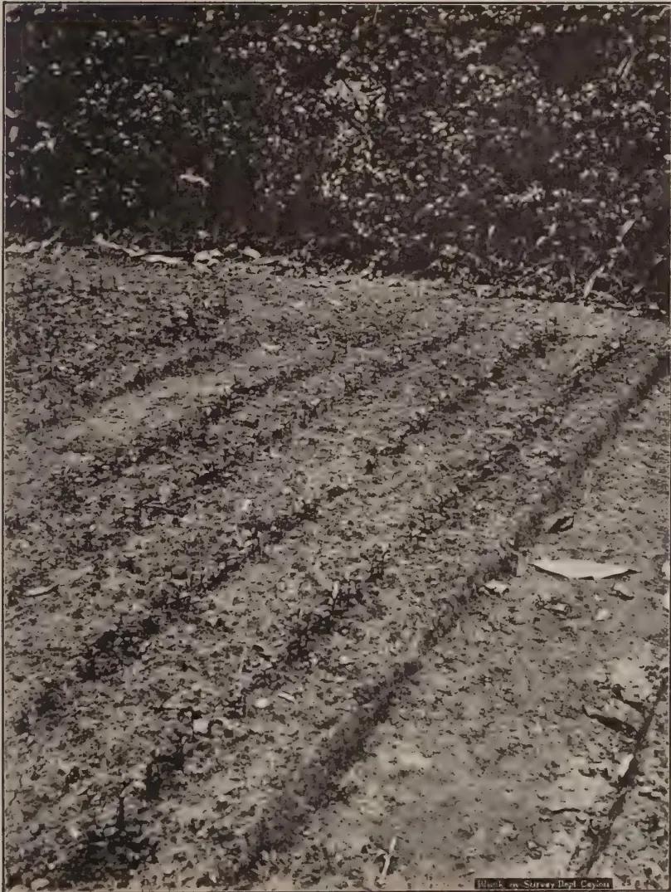
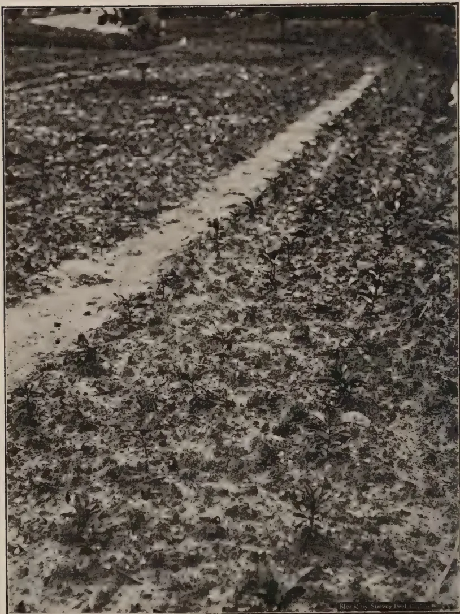
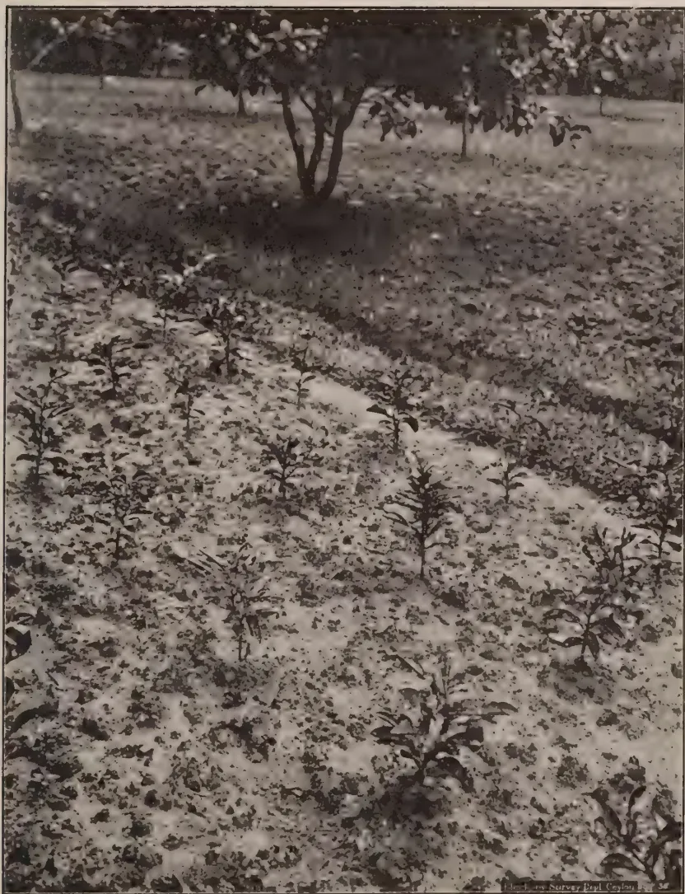
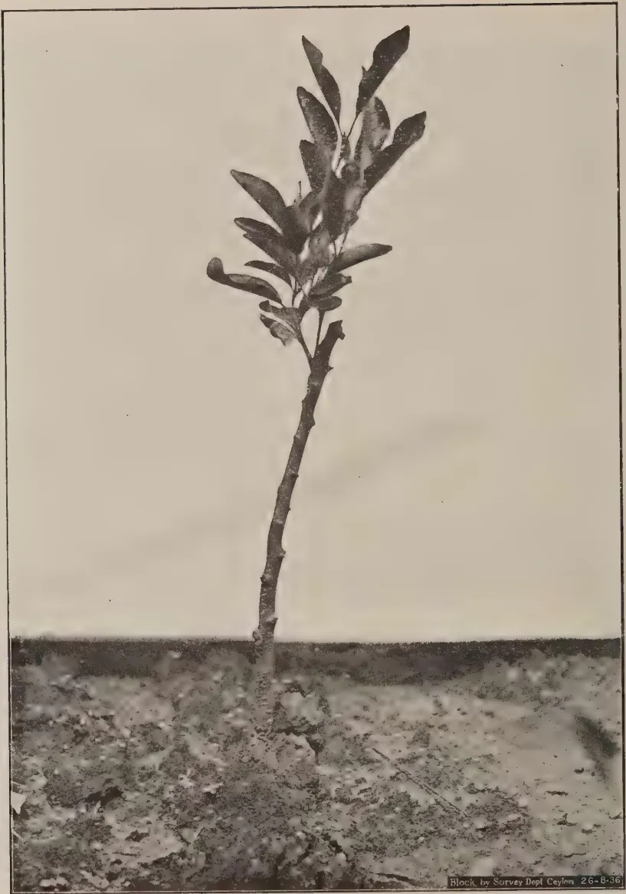
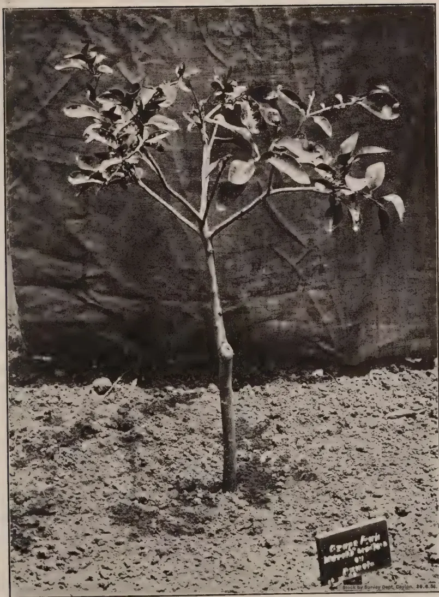
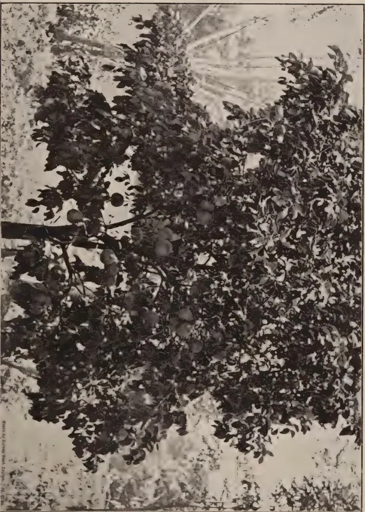
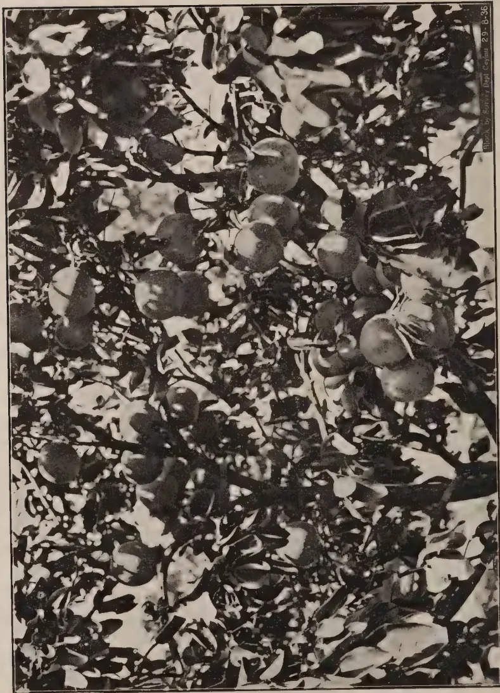
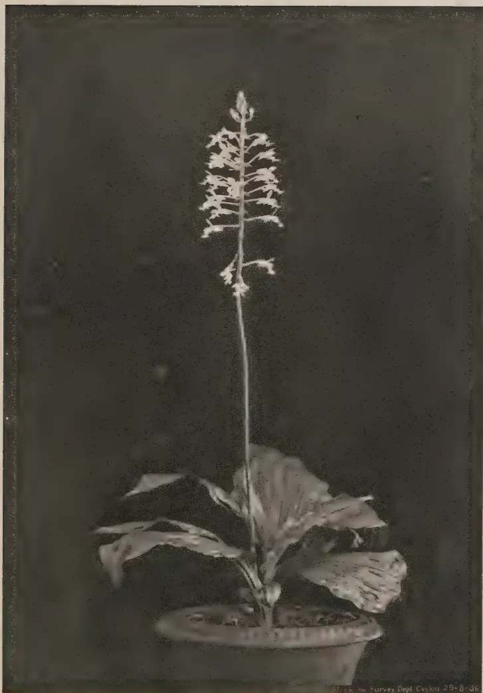

The
Tropical Agriculturist
September, 1936
EDITORIAL
THE CASHEW NUT
THE growing popularity of the cashew nut in the confectionery trade of America and Europe has drawn considerable attention to this commodity. Letters appear in the newspapers from time to time, and the Department of Agriculture receives many requests for information with regard to the cultivation of the tree and the marketing of the nut.
Very little information is available locally on this subject. The cashew tree was never brought under cultivation in Ceylon, and the nuts gathered from trees that grew wild in neglected village gardens were sold in the bazaar for immediate consumption. But a flourishing export trade in cashew kernels has been established on the Malabar coast and Mr. W. R. C. Paul, an officer of the Ceylon Department of Agriculture, visited that district early this year and studied the methods of cultivation of the tree and of the preparation of the kernel for export. We publish a summary of his report in this number.
The cashew tree is not fastidious about the climatic and soil conditions in which it grows, and requires very little attention from the planter. The nut is easily harvested and transported, and, dried in its own shell; it keeps fresh for a long time. The demand is not only steady, but growing, and the market finds the present Indian supply insufficient. It may be said that more favourable conditions for the establish-
132ment of a prosperous industry can hardly be imagined, but there is still one uncertain factor—the cost of production of the raw nut in Ceylon. Mr. Paul does not say what price the export merchant pays for the cleaned kernels, but if the Indian price of 5 annas per pound of whole kernels reflects the market price with fair accuracy, the manufacturer cannot afford to pay more than cents to 5 cents per pound of nuts.
The all important question is whether nuts produced under cultivation can be marketed at that price. If the Indian average of 20 lb. per tree is achieved, and fifty trees can be planted in an acre the total produce from an acre will be 1,000 lb., which are worth Rs. 45 at cents per pound. A gross income of Rs. 45 per acre is hardly likely to stimulate the cultivation of cashew on a plantation scale, and it is feared that if these figures are accurate, the cashew must continue to grow wild and yield only a precarious income to the owner of the land in which it grows. It is necessary to gather exact information with regard to the yield of nuts per acre, and for this purpose the Department of Agriculture has put down a number of trial plantations in different parts of the country. We are unable to advise the public to plant large areas in cashew until the results of these experiments are known.
133T. H. PARSONS, F.L.S., F.R.H.S.,
CURATOR, ROYAL BOTANIC GARDENS, PERADENIYA
IN May, 1930 an article on "The Present Position of Orange and Grapefruit Cultivation in Ceylon with Suggestions for its Improvement" was published in The Tropical Agriculturist. Reprints of this article were distributed free in the form of a leaflet No. 59—to those who were known to be interested in the growing of fruit. It is now attempted to revise the article and to bring it up-to-date by embodying in it the knowledge that has been acquired during the last 6 years.
The subject of citrus cultivation is one on which much can be written and on which much can be done, for tree fruits that are likely in the future to attain real commercial importance in Ceylon are regrettably few, while citrus is at least one that can be made so. Interest has slowly but gradually been stimulated on this subject during the past few years and a larger acreage is now under these fruits in different parts of the country, but it cannot yet be said that any great strides are being made in raising citrus to the status of a major agricultural produce of the country.
Other agricultural countries, and particularly the West Indies, have realised the potentialities of citrus production and are increasing their acreage to a considerable extent annually and everything possible is being done there, to encourage and assist the planting of citrus where conditions are favourable. We in this country have land available for the purpose with a considerable area where soil is sufficiently favourable, and on the whole very satisfactory climatic conditions and labour. We only require the capital and enterprise combined with a rigid insistence on the use of the best material and the best cultural methods of the day.
134The first step that must be taken is to eliminate the extended use of the imported plant which is budded on to a rootstock not always satisfactory to the soil and climatic conditions of the proposed orchard by raising budded plants on local rootstocks in large quantities in selected centres.
The United States of America, Spain and Brazil are the world's largest producers of oranges, and Italy the largest producer of lemons. America is also the largest producer of grapefruit, the combined area under orange and grapefruit, amounting to no less than 760,000 acres. Japan is the largest producer and consumer of mandarins whilst the West Indies and possibly S. India produce most of the limes.
Combining the groups—orange, grapefruit, mandarin, lemon and lime—under the one heading of citrus, the production in 1930 varied from 1,117,000 tons for Spain to 13,000 tons for Porto Rico, while there were thirty-three other countries which produce or export amounts under 12,000 tons of these fruits per annum. Since that date the increase of output resulting from the maturity of young plantations and from the opening of new plantations has been considerable. On the other hand there has been an enormous increase in fruit consumption within the past 5 or 6 years throughout the world and particularly in Great Britain which is the largest market for most of the Empire fruit exports. As a measure of the progress in fruit cultivation and fruit production that was made within a short period of 4 years, it may be mentioned that South Africa increased her export of grapefruits from 6,000 tons in 1930 to 12,000 tons in 1934, Jamaica from 3,000 tons to 6,000 tons, and Palestine from 2,000 tons to 15,000 tons in the same period. It may be observed here that 99 per cent. of the world's output of orange, lemon and mandarin production is produced between latitudes 20° and 40° in both northern and southern hemispheres, and only one per cent. between latitudes 20° north and south of the equator, the latter applying to the small production of this fruit in Jamaica, Costa Rica, Honduras, India, Bahia, Queensland, the Society Isles, Columbia, Ecuador and Tropical Africa.
It would appear that Ceylon, being situated between latitudes 6° and 10° north of the equator, does not come within
135the normal orange and mandarin growing belt, and that the success of the orange cultivation on any large scale within her latitude is problematical. There are however certain factors which may counteract the disadvantage of latitude to a considerable degree, and these Ceylon possesses in its highland areas with their varying conditions of rainfall and temperature and of soil. The fact that Jamaica under conditions similar to those of the low and mid country of Ceylon is increasing its annual production of citrus indicates that its cultivation in Ceylon should be successful, if suitable types or varieties of fruit are obtained and proper cultural methods applied.
The common orange of Ceylon, especially when not cultivated with some care, yields a fruit often coarse, thick skinned, and invariably green when ripe, due in some degree to inherent characters of percentage often very mixed, but principally to a tropical environment combined with a too heavy rainfall and lack of cultivation, and not infrequently to poor or bad drainage. As is the case with most other good fruits, successful propagation of the orange and grapefruit is best attained by means of budding and grafting.
The quality of a fruit is perpetuated through the buds and it is by this means rather than by transmittance through seed that the desired or improved characters can be retained.
These methods of asexual propagation, otherwise termed budding and grafting, introduce or upset certain characters of the plant by the interaction of the stock and the scion and this question has in late years received much attention in regard to citrus.
In the citrus growing belts much variation in the yield of different trees in the same orchard has been observed though growing under apparently the same conditions. This is now understood to be due chiefly to certain factors such as the different types of rootstock utilised, certain variations from the type that are inherent in the buds of certain parent trees and the accidental differences in the treatment given to some of the orchard trees, or to varying environment as to soil and climatic conditions the budded plant has to withstand.
It is however most probable that in Ceylon the stock character is of the greater importance. Whatever the root-
136stock this is invariably of seedling origin and consequently germination of the seed often results in many different forms of seedlings even where the fruit is all gathered from one tree. In spite of this however seedling rootstock is used for the majority of present day fruits.
The effects of this irregularity of the seedling are at least minimised by a vigorous thinning out in the seedling stage by discarding all but those of regular size and appearance up to budding age. When the seedling is budded or grafted, the scion has a somewhat levelling effect on growth and performance, and the difference tends to disappear or become much reduced.
The impression that a budded or grafted tree must of necessity be superior to a seedling tree is not strictly correct though it is generally so, as much depends on the quality of the fruit tree from which the bud or graft is obtained, its parental characters, its suitability to the stock on which it is used, the hardness of the stock, its disease-resistant qualities, and its adaptability to the scion for which it is to be used. Hardiness, as generally understood, is the power of the stock to resist cold conditions, but in this case what is meant is a stock possessing qualities to resist heat with, at times excessive moisture and the lack of any dormant season.
Importations of budded or grafted oranges, mostly of the Washington Navel, Valencia and Mediterranean Sweet varieties have been made by Ceylon residents for many years past, and the selection of these types is a wise one. The attention paid to the question of the rootstock to which these are budded is rarely, if ever, inquired into, yet with varying conditions of climate and soil existing in Ceylon, it is probably the most essential point to keep in mind.
The most hardy and vigorous rootstock suited to our conditions in respect to orange, grapefruit, mandarin and lemon should be utilised in Ceylon; these are, as far as present experiments go, the sour or Seville orange, the pumelo, and the rough lemon. The sweet orange was at one time a universal stock in Florida, California, the Mediterranean countries and Australia, as it has a well developed root system and rapidity of growth, but owing to the variety in seedling characters and its susceptibility to Mal di goma its use has been largely discontinued, and
137the rough lemon and sour orange have been utilised. The latter is of particularly robust growth, probably the most vigorous species of the genus; the root system is well developed, and it is believed to be immune from root rot. Hume in "The Cultivation of Citrus Fruits," states "It is safe to say that over seventy-five per cent. of the world's output of citrus fruits is produced by trees on sour orange stock."
In Ceylon, both sour orange and pumelo and, to a lesser degree, the rough lemon are available and appear to meet all the requirements of a suitable rootstock under the conditions experienced at Peradeniya and the semi-dry zones.
The imported plant from Australia or South Africa has much to recommend it in the early stages of the development of a fruit industry by reason of the rootstock used which is either the rough lemon or the sweet lime, but imports are expensive, and in the long run Ceylon must look to local rootstocks and local grafts. Both the rough lemon and the sweet lime are of rapid growth and carry early fruiting properties to the scion, are strong rooters and withstand drought conditions better than most other rootstocks except possibly the Rutaceae plants indigenous to our dry zones, and are therefore very suited to the dry zones. From present appearances however the great drawback in the use of the rough lemon and sweet lime as a rootstock is that the plant combination is short lived as compared with other rootstocks, particularly in the moist zones where growth is more or less continuous. The pumelo and the sour orange rootstock, though of less rapid growth in the early stages and in its first fruit production, are, where conditions are suited to it, much longer lived. To the orchardist this is of the first importance if the orchard is to be on a commercial basis. At the same time the import of South African or Australian plants is recommended to a certain extent in that an ample supply of proved budwood in the Island is necessary before any large operations in budding on local rootstocks can be carried out.
The general conclusions arrived at in experiments undertaken at Peradeniya are that the pumelo and the sour orange are stocks best suited to the low and mid-country districts of Ceylon under moist conditions, the sour orange for up-country moist and semi-dry regions of Uva, and the rough lemon and
138possibly the local-lime for the low-country regions proper, especially so if it is grown under irrigation. The indigenous Atlantia Missionis, the "Pamburu" of the Sinhalese and "Kuruntu" of the Tamils may also prove an excellent root-stock for low-country dry districts, as it is a seemingly disease-resistant relative of the orange; but this tree, like most of the indigenous Rutaceae, being a native of the dry region proper does not grow well under the moist conditions of Peradeniya, and little can be made of it here.
Of the oranges generally in cultivation, four main groups are recognised, the Spanish, the Mediterranean, the Blood and the Navel, and of these the Navel predominates in Ceylon. Selections from other varieties are being tried with advantage with the types of rootstock available and the varying conditions experienced in the Island. It is well to remember however that the best orange growing districts are those of medium elevation possessing moist to semi-dry conditions.
There is a wide selection in all groups and those most generally in cultivation at present are the Washington Navel, Mediterranean Sweet, Valencia Late, Pineapple, St. Michael, Jaffa and the Malta Blood. All have in their respective localities produced fruit of very good quality and a judicious selection from the above should overcome the great disadvantage of market gluts, since "Jaffa" and "Mediterranean Sweet" can be classed as early fruits, "Washington Navel," "Pineapple" and "Malta" as mid season fruits and "St. Michael" and "Valencia Late" as late bearing fruits.
Of mandarins the "Indian Nagpur" (so called orange) mandarin is doubtless, in our present knowledge of these fruits, one of the best for low-country conditions either in the moist, semi-dry or the dry regions. Irrigation is essential in the dry zone. The Nagpur is loose skinned variety grown generally in the Central Provinces and in other parts of India to the best advantage and consequently able to stand extreme heat better than the sub-tropical mandarin varieties. Of the latter, the "Dancy" mandarin most famous in California and Florida and of outstanding merit is as yet practically unknown in the east but the "Nagpur" is, under India conditions, considered to be its equal. It is also, in India, classed as a double cropper,
139but in the semi-dry regions of Ceylon it has not yet shown this character, though it may occur when this variety is established under more varying conditions and on a larger scale than at present in the mere moist zones.
The "Sylhet" orange, another Indian though a tight skinned variety, is also highly recommended. It needs, however, as with most other mandarins here such as "Emperor" and "Beauty of Glen Retreat," some little elevation to obtain the best results.
Of lemons, the "Eureka," the "Lisbon" and the "Villa Franca" are well suited to most parts of Ceylon and give heavy yields of excellent fruit in most localities, whether grown on the imported rootstock, on local pumelo or on Seville orange. At Peradeniya trees have fruited as early as 21 and 24 months from buddings on the pumelo and Seville orange rootstocks respectively.
Since limes do not appear to become cross pollinated so freely as the sweet orange and grapefruit varieties and the seedling is almost invariably being true to type, grafting or budding of these does not appear to be so necessary in its case. The seedless form must obviously however be budded but the "British Guiana" form of lime can be well recommended as seedlings for producing both heavy and good quality crops in wet and in dry localities. In the latter the tree appears a one season crop, usually from February to May, but in the moist zones the tree produces fruit all the year round.
Low-country to mid-country districts of the Island are more suitable for grapefruit cultivation than higher elevations. It has been mentioned before that the best results in orange cultivation are obtained at medium elevations, but a warmer temperature and a larger amount of moisture are generally necessary for grapefruit, though sheltered pockets up-country are also to be recommended.
The stocks suitable for this type of citrus are again the sour orange, the pumelo and possibly the rough lemon. Buds established on these stocks make vigorous and shapely growth, and are to be recommended, provided good drainage is afforded to the plant.
140Among the best varieties of grapefruit so far tried in Ceylon the "Marsh's Seedless" stands first, with "Walter's," "McCarthy," "Pernambucco," "Cecily's Seedless" and "Triumph" in order of importance. The seedlessness of "Marsh's" together with its robustness on various stocks and its adaptability to the various conditions in Ceylon gives this variety the precedence of others and for orchard work it is highly recommended. It is however in other countries considered a mid to late season variety, the "Walter's" being considered the earlier bearer of the two.
Both the orange and grapefruit varieties are now propagated chiefly by means of budding, for as mentioned before, the fruit of seedling trees cannot be depended on to result in uniform specimens, and numerous different types of fruit will invariably be observed in even a small group of such trees.
Good seedlings of the sour orange, pumelo or rough lemon for rootstock purposes are the first necessities: two points should be observed, firstly, that the seed is obtained from fruit thoroughly ripe, and secondly, that the fruit is from perfectly sound and healthy trees. Only plump heavy seed should be selected, the lighter seed being discarded; the seed should not be allowed to dry, and should be washed before planting.
Seed beds should be prepared in a sheltered position with good soil and ample drainage. The beds should be well dug and the soil pulverised, adding a small proportion of cattle manure or leaf-mould and removing all coarse stones, leaving a good friable surface. The width of the seed bed should not exceed four feet, so that attention in weeding and cleaning may be made without trampling the beds. Seed should be sown about one inch deep, in rows one foot apart, and one foot between the rows if for direct budding, a procedure carried on quite successfully at Peradeniya; but seed sowing at two inches apart in the row and one foot between the rows is generally adopted if the seedlings are to be transplanted before budding, the latter system being the best generally. After the seed is sown the beds should be shaded in the mid-day hours for the first few weeks and should be watered only when dry, the bed surface being frequently stirred to allow ample aeration.

A black and white photograph showing a field of sour orange seedlings. The seedlings are small, dark, and are arranged in distinct rows on the ground. The rows are separated by a distance of one foot. The background is a dense, dark area of vegetation. In the bottom right corner of the photograph, there is a small, dark rectangular label with white text that reads "Black on Survey Dept Cayou".PLATE I.
Sour orange sown in drills and raised in seedling beds, rows one foot apart

A black and white photograph showing a field of transplanted seedlings. The field is divided into rows by a light-colored path or furrow that runs diagonally from the upper left towards the lower right. The seedlings are small, dark, and appear to be growing in dense clusters. The ground is light-colored, possibly soil or sand. In the bottom right corner, there is a small, faint watermark that reads "Block to Survey Hill".PLATE II.
Transplanted seedlings in beds one foot apart in and between rows
141Transplanting should take place when the seedlings are approximately four to six inches high, these being then planted out in rows at from twelve to fifteen inches apart and the same distance between the rows. Particular care will here be required to ensure as little check as possible to the growth of the plants and the strongest and best of the seedlings only should be used, all weak and unhealthy plants being rigorously discarded. The roots should not be bunched together when planting but spread out and arranged near the surface of the soil. Too deep transplanting or planting is a very common fault.
Budding can be undertaken at a point 10 to 12 inches above ground level when the seedlings have attained the thickness of a lead pencil or more at that height. The best season for budding varies with the different localities, but in general those months with light to moderate rainfall give more satisfactory results, in other words budding should be avoided during the periods when heavy monsoon rains are experienced and in time of drought. A good practical guide however is to bud at the time when the bark of stock and scion peels most readily from the wood.
In selecting budwood, all angular shaped shoots should be avoided and buds should be obtained only from well matured round wood of the previous season's growth. It is perhaps necessary to add that budwood should be taken only from those trees which show healthy growth whose good bearing qualities and flavour of fruit are known. As bud variation occurs in both orange and grapefruit the practice of obtaining budwood from young trees that have yet to fruit, even though they may have been budded from good parent trees, is not recommended.
The rectangular patch, the T bud and the inverted T are satisfactory modes of budding for both oranges and grapefruit though inverted T buddings give the best results at Peradeniya. The bud shield should be from half an inch to one inch long according to size of stock at time of budding. The bud when cut from the bud stock should be immediately inserted in the cut in the stock, every care being taken not to injure the cambium surface of the bud, and the bud union then wrapped fairly firm with waxed cloth. After ten or twelve days the wrappings should be loosened and after three weeks the wrappings can be removed. If the union is successful the stock should be shortened to allow its vitality to be transmitted to the dormant
142bud and hasten its development. As the new bud develops the top of the stock will eventually die back to the point of junction with the scion and should then be cut away with a sharp knife and the cut treated with a preservative.
Transplanting of the budded plant to permanent quarters can be undertaken at 12 months more or less from budding, and showery weather should be selected for this operation. Good holes, at least 3 feet by 3 feet should be prepared and refilled with a mixture of good soil and well rotted cattle manure, and plantings made at distances of 14 to 16 feet apart for lime and mandarins, of 16 to 20 feet apart for orange and lemons, and 20 to 25 feet apart for grapefruit. Care should be taken not to insert the young plant in the bed too deeply, and it is better to plant high to allow for sinking of the bed, the crown roots appearing just below the ground level. Shading and regular watering, should the weather be dry for the first few weeks from planting, must be made. The staking of the plant at this juncture is important for the eventual shaping and development of the tree, and stout stakes should be used.
As the bud grows, a standard habit should be encouraged and all side growth should be rubbed off as they appear. As the young buds reach the desired height—that is 36 inches from the ground—they should be topped by cutting back to 24 inches from the ground to allow side branches to develop. The topping will result in several shoots being thrown out and four or five of the strongest should be selected, and the rest removed. This can be done in the nursery if the budded plants are not transferred to permanent quarters at a particularly young stage.
The citrus is a deep rooted plant and has a strong tap root. Trees of that description planted in shallow soils stagnate in their growth at an early date and fail to develop. A deep root is therefore necessary. Good drainage is essential and heavy soils through which water does not percolate easily and which is constantly moist is decidedly unsuitable for all varieties of citrus. Equally unsuitable are light sandy soils, especially for grapefruit, because they are deficient in plant food, and that deficiency can be neutralized by manuring only at an uneconomic expenditure of money.

A black and white photograph showing a field of young plants, likely seedlings, arranged in rows. The plants are small and have several leaves. The ground is covered with a light-colored material, possibly mulch or straw. In the background, there are larger trees with leaves and some fruit. The image is framed by a thin black border. In the bottom right corner, there is a small, faint watermark that reads "Plantation Survey Dept. Ceylon 1925".PLATE III.
Transplanted seedlings in beds 15 inches apart in and between rows

A black and white photograph of a young plant, likely a rubber tree, at 6 weeks from budding. The plant has a single, straight, slightly curved stem with several large, dark, oval-shaped leaves at the top. The base of the plant is in a patch of dark, loose soil. The background is a plain, light-colored sky. In the bottom right corner of the image, there is a small text label: 'Block by Survey Dept Ceylon 26-B-96'.PLATE IV.
The budded plant at 6 weeks from budding. The top of stock is cut back to junction of stock and scion as the top dies back. Budded at 12 inches from ground
143After careful study of this subject the Agricultural Chemist is of opinion that a deep, free draining soil of a light loamy texture is best for citrus, but heavier loams which are well drained are also suitable. Locally, soils derived from limestone, provided they are not shallow, are very suitable for the crop. Heavy clays are unsuitable, as there is a tendency to the development of gummosis. A soil containing a impermeable hard pan or hard, impenetrable gravel within 5 or 6 feet of the surface is not suitable. Good cultivation by deep trenching and judicious manuring should render a fair range of soils suitable for citrus cultivation.
Rainfall is an important factor, but experience in this respect with regard to the optimum conditions are inconclusive and almost bafflingly contradictory. Quite useful crops of the Washington Navel orange have been obtained without irrigation in districts receiving only 45 inches of unevenly distributed rain per annum, whilst at the other extreme good crops are obtained with 168 inches of annual rainfall. The difference is remarkable, but the latter trees are observed to be planted on fairly steep land which doubtless counteracts to a large degree the disadvantages of the high rainfall.
The ideal conditions for successful orange cultivation in non-irrigable areas of Ceylon are afforded by a combination of an elevation of 1,500 feet to 5,000 feet, gently sloping land, well drained alluvial soil of some depth (the deeper the better), a well distributed rainfall of 50 to 75 inches and protection from strong winds.
For grapefruit cultivation the elevation most suitable would be from sea level to mid-country and should not exceed 4,000 feet. Even at that height a site is suitable only if it is exceptionally well protected. A site should be selected with deep soil on sloping land with ample drainage and a rainfall of anything over 60 inches, equally distributed, but with a rainfall of over 120 inches per annum a good system of drainage is imperative. If rainfall is under 60 inches per annum, irrigation becomes necessary.
The budded plants having been established in permanent quarters as described under the head propagation and planting, subsequent methods of further cultivating, pruning, manuring, etc., remain to be considered. In the case of small groups of
144a few trees planted within the compound area of the ordinary Ceylon house, catch crops of vegetables could be raised for the first few years if the ground immediately surrounding the new planted trees is left clear, but the subsidiary crop should be given up on the trees attaining the age of approximately years from planting, and earlier if the trees are observed to be making very rapid growth.
Where groves are planted on estate commercial lines the sowing of cover crops best suited to the locality is advisable. Not only does this shade the bare land from the sun but when these crops are forked in humus is added and in course of time the condition of the soil is greatly improved. In this case also an area around the planted trees of at least 3 feet from the stem should be kept clear to allow periodical manuring and the cultivation of the soil immediately surrounding the tree.
Pruning of citrus is probably one of the most difficult problems to advise on since trees do not grow exactly alike or take exactly the same form.
Some fruit growers are most anxious to prune, while others are averse to it, and individual opinion and experience count a great deal, especially in the tropics, for pruning comprises a multitude of practices and aims which vary according to type and variety of tree or shrub, the elevation, the rainfall, and the soil. Before he decides to prune, the orchardist must have a definite idea of the reason for pruning and the object to be achieved by pruning. Generally, little pruning is required with citrus as the tree in its habit of growth, practically prunes itself. Occasionally however some trees make excessive growth at the expense of the fruit crop whilst others may present the appearance of a sick or a starved tree.
In the former instance a liberal supply of nitrogen has probably caused a vigorous leafy growth and as long as this continues little or no fruit is produced. A cessation of manuring should encourage fruitfulness or failing that a pruning of roots may be tried so as to reduce the nitrogen supply to the roots and thus secure a balance between nitrogen supply and the amount of carbohydrates manufactured by the leaves.
In the case of the sick or starved tree, the indication is that it has exhausted the nitrogen supply in the soil and is

A black and white photograph of a young, pruned tree, likely a grapevine, standing in a field of loose soil or gravel. The tree has a single, relatively straight trunk with several branches extending upwards and outwards, each bearing clusters of leaves. The background is a dark, textured wall or fence. In the lower right foreground, a small, dark rectangular sign is placed on the ground. The sign has white text that reads: "Grape Fruit bearing branches of 12' branch". Below this text, in smaller letters, it says "Block by Survey Dept. Caylan, 26-6-36".PLATE V.
The budded plant after pruning to form the head of tree. Note stock 12" and scion 12". The scion has been cut back and branch system formed
![A black and white photograph of a young 'Washington Navel' orange tree, approximately 2 1/2 years old. The tree is bushy with many small leaves and several small, round fruits visible. It is planted in a field with a wooden fence in the background. The ground is covered with grass and some fallen leaves or mulch. The tree is relatively small, with a single main trunk and several branches spreading out. The leaves are small and oval-shaped. The fruits are small and round, clustered on the branches. The background shows a wooden fence made of vertical slats. The ground is uneven, with patches of grass and some darker areas that might be mulch or shadows. The overall scene is a typical orchard setting.](808b5c15b55bab7c4cdf8c05cc688883_1_img.webp)
PLATE VI.
A year old "Washington Navel" orange tree. No pruning is yet required here, but the straggling end shoots can now be shortened back
145therefore suffering from nitrogen starvation which affects both growth and fruitfulness. A pruning out of all sick growths and a general shortening back of the remaining branches should be undertaken with a forking up of the soil around the tree and an application of a heavy dressing of well rotted cattle manure. The nitrogenous substances in the manure will in a short time induce young and healthy growth and this in its turn increase the carbohydrate supply, the tree thereby returning to, or attaining, a fruitful condition. With a generally healthy tree however it is wise to remember that citruses are evergreen trees and as a rule require little treatment after the framework of the tree has been established. The framework is the main consideration and, thus having attained this as advised under the head propagation, a periodical thinning of any obvious thick or overlapping growth to allow air and sunlight to reach the inside foliage and branches is generally all that is required.
The tree should not at any time be allowed to become too dense, the object in view being the formation of a shapely and well balanced tree from which all dead, decaying and injured or superfluous wood is regularly removed. Too many branches or a too thick branch arrangement leads to crowded and weak growth resulting in poor crops, or crops of small fruit, and, through the consequent lack of proper ventilation, the liability to many diseases and pest attacks.
Citrus plants have no recognised dormant season, the roots being active throughout the year in the moist zones and have consequently to be fed. Where organic manures are available these should be applied in view of the lack of humus in Ceylon soils in general. Light dressings of farmyard manure, if well rotted, should be given once the trees begin to make headway and the best time to apply it is at the beginning of the monsoon. Where farmyard manure is not available in sufficient quantity, artificial manures should be used.
The Agricultural Chemist at Peradeniya advises that the application of nitrogen is essential on all types of citrus soils and of potash and phosphoric acid particularly on the light soils. Artificial manures should be applied a month or so
146before flowering. For local soils of average quality the following mixture is recommended tentatively for bearing trees :—
4 parts of sulphate of ammonia
2 parts superphosphate
1 part sulphate of potash
at the rate of 4-8 lb. per tree depending on its age. Smaller applications are given for younger trees.
Budded plants of orange in the moist zones should begin to produce fruit about the third year from budding and grapefruit in the fourth year from budding if the pumelo or sour orange is the rootstock.
In the dry zones where rough lemon is the rootstock an earlier fruiting can generally be expected. Generally speaking also full production should be reached at about the tenth to twelfth year from time of planting in moist areas and eighth to tenth year in dry areas.
Crops will necessarily vary according to the type of tree, the health of the tree and the cultural methods afforded to it. Unless the tree has made particularly strong and vigorous growth, the first fruit crop should not be allowed to exceed 8 to 12 fruits. At about the eighth and tenth year in dry and moist zones respectively full crops can be expected and good cultivation onwards should maintain them, climatic conditions permitting, for many years.
Full crops would in the case of oranges comprise anything from 300 to 600 fruits per tree and occasionally an exceptional tree would produce up to 1,000 fruits per annum, but a very heavy crop one year will usually lead to a reduced crop in the following year, though this is not always so. The probable annual yield of grapefruit at maturity and onward can only be approximately estimated as plantations or even individual specimens of these trees are still in the stage of infancy ; from the data available on such crops in other parts of the world a yield of 350 to 500 fruits of average size per tree is generally considered a fair crop. But the applicability of these figures to Ceylon is doubtful, and it is of importance that present and prospective growers of this fruit should endeavour to obtain accurate individual yield records of their trees for some years. The unit of production should be the individual tree, for with

A black and white photograph of a grapevine heavily laden with dark grapes. The vine is supported by a trellis structure, and the background shows a bright sky with some clouds. The grapes are dark and round, hanging in clusters from the branches. The leaves are dark and serrated. The overall scene is a lush, fruiting vine.Photo by Murray West, Copyright, 1905, N. Y.
PLATE VII.
A fine fruiting specimen of "Marsh's" grapefruit at Nalanda Experiment Station

A black and white photograph showing a close-up view of a grapefruit tree branch heavily laden with ripe, round grapefruits. The branches are thick and covered in leaves, with many fruits visible, some partially obscured by others. The lighting creates strong shadows, highlighting the texture of the fruit and foliage. In the bottom right corner of the image, there is a small vertical credit line: "Photo by Stanley Daget Coyne 29-B-36".PLATE VIII.
A close up view of "Marsh's" grapefruit tree at Nalanda Experiment Station
147citrus, as with most other fruit trees, there are good yielders and poor yielders, though the variety grown may be of the best. The poor yielders are being maintained at a loss to the growers, and if proved material is available for replanting the returns of a plantation or garden may be greatly increased by replacing bad yielders with new plants. A plantation as a whole may produce a satisfactory crop, but if a proportion of the trees are not bearing well the total production is obviously not as high as it should be.
The following are a few notes on the chief pests of citrus, contributed by the Government Entomologist at Peradeniya :—
Fruit-Flies : The common citrus fruit-fly in Ceylon is Dacus ferrugineus, a medium-sized rather slender brownish fly, with one pair of clear wings and a pale yellow band edged with black across the middle of the abdomen. The female fruit-fly punctures maturing citrus fruit with its long ovipositor and lays its eggs just inside the pith in the flesh. The maggots feed inside the fruit, causing it to decay and sometimes to drop prematurely. The full grown maggots emerge from the fruit and pupate in the soil. The life-cycle from egg to adult occupies from about 3 to 5 weeks.
Control : Fruit-flies require food before mating and oviposition. They can be controlled to some extent by sweetened poisoned baits or sometimes trapped by the use of chemical odours which may be attractive to them. The following bait may be of value :—
| Arsenate of lead | .. | .. | oz. |
| Cheap sugar or jaggery | .. | .. | 12 oz. |
| Water | .. | .. | 10 pints |
The arsenate of lead is made into a paste with a little water and stirred with the sugar solution into the remainder of the water. The bait can either be exposed in specially prepared tins or sprayed on to the foliage as indicated in the detailed notes by the Entomologist. In either case the bait should be applied about one month before the first fruit is expected to ripen and should be repeated at intervals of about one week until the fruit is off the trees. Fresh applications should be given after heavy rain.
148All fallen fruit should be collected and destroyed daily to prevent the emergence of the maggots, which will pupate in the soil and come out as flies later.
Fruit-fly attack can be prevented by enclosing each fruit or small bunch of fruit in grease-proof bags, and in districts where canker is not prevalent the bottom of the bags can be left open, since the fruit-fly only attacks fruit from above and will not enter from below. For more detailed information on the bagging of citrus, especially grapefruit, The Tropical Agriculturist for February, 1936 should be consulted.
In some countries attempts are being made to control citrus fruit-fly by the importation of foreign parasites or by making more use of indigenous parasites. Dacus ferrugineus is known to have one or two species of local parasites and arrangements are being made to breed and liberate two other species of parasites recently imported.
Fruit-Piercing Moths : These large night-flying moths which belong mostly to the genus Othreis have orange-yellow underwings with a kidney-shaped dark spot in the centre of each wing and dark margins. The fore-wings may be brown or green according to the species. The damage to the fruit is done only by the moths which puncture ripening fruit with their proboscis and suck the juice. Punctured fruit turns rotten and drops. The caterpillars of these moths have nothing to do with citrus, but feed on the leaves of other plants.
Control : The fruit-fly poisoned bait and bagging of fruit would also be useful against these moths.
Citrus Butterflies : The caterpillars of two species of large Papilio butterflies are usually to be found on young citrus plants, the younger larvae spoiling the shoots and the older larvae sometimes stripping the plants if not controlled. These larvae seem to be somewhat immune from attack by enemies, since the younger larvae are protected by their resemblance to birds' droppings, while the older larvae are able, when disturbed, to thrust out a pair of fleshy "horns" which exude a pungent odour.
Control : The younger stages can be controlled by the combined spray recommended below for leaf miner, while the older larvae and chrysalides can be removed, or the plants sprayed with lead arsenate.
149Caterpillar Pests : As indicated in a previous article in this Journal Vol. LXXXIII No. 3, September, 1934, the normal growth of citrus plants in Ceylon is often seriously crippled by the combined attacks of two small caterpillars, the leaf-miner and the leaf-roller, and both these insects are essentially pests of young plants. Reference may be made to this article for fuller details.
The leaf-miner (Phyllocnistis citrella) is a very small caterpillar which feeds inside the young leaves, making irregular galleries and leaving the epidermis as a silvery film. The leaves become distorted and never develop normally.
The leaf-roller (Psorosticha zizyphi) lives on the surfaces of the younger leaves, webbing these together or rolling them up and feeding here and there. These small caterpillars wander about freely and even a few of them can spoil the appearance of a young plant, all the younger leaves and shoots being bitten off or rolled up as they appear.
These two pests are not uncommonly found together on the same young plants, which fail to develop normally and are readily exposed to infection by citrus mildew and canker.
Control : The following spray mixture is recommended for young citrus plants during the first few years of their growth, and if applied regularly at least twice a month, or more frequently during the production of young leaves, will help to keep the plants clean and vigorous and free from most leaf-eating pests and from sucking insects, such as scales and aphids. The nicotine and soap are insecticides, while fungus diseases, such as mildew, are controlled by the colloidal sulphur.
| Nicotine sulphate | .. | .. | 2 oz. |
| Colloidal sulphur | .. | .. | 4 oz. |
| Soft or yellow soap | .. | .. | 4 oz. |
| Water | .. | .. | 4 gallons |
The soap is dissolved first in a little water, soft soap (not carbolic) being preferable, since it dissolves more easily. If hard yellow soap is used it should be shaved off into thin slices so that it may dissolve more rapidly. Add the remainder of the water, stirring gently, and then stir in the other ingredients. Spraying should be done preferably in the early morning or late afternoon.
150Sucking insects : The leaves, twigs and sometimes the fruit of various kinds of citrus, especially the older trees, are frequently attacked by different species of small sucking insects, such as scales, mealy bugs, "black fly" and aphids. The presence of one or more of these species in large numbers on plants already crippled by leaf-eating pests has a further weakening effect, and unless measures are taken to control them, the health of the plants and the quantity of the fruit become seriously impaired. Only brief notes are given here, but fuller information about each individual pest can be obtained from the Entomologist, Peradeniya.
Scale insects : The common citrus scales are the green scale or "green bug" (Coccus viridis) and mussel shell scales (Lepidosaphes spp.). The former attacks the leaves, settling down on either side of the underside of the midrib, and sometimes clusters thickly on tender shoots. The latter occurs on the leaves and sometimes disfigures the fruit.
"Black Fly" : These small sucking insects belong to the family Aleyrodidae, the two common species being Aleurocanthus woglumi and A. citriperdus. They are usually to be found in black patches on the undersides of leaves, sometimes causing these to become distorted.
Aphids or Plant-lice : These small dark brown to blackish insects (Toxoptera aurantii) are sometimes found feeding actively in clusters on the young shoots, causing the developing leaves to curl. They have a winged stage at certain times of the year.
Sometimes the most conspicuous feature of an attack of scale insects, "black fly," aphids, etc., is the presence of a black film on the upper surfaces of the leaves. This film is a fungus known as "sooty mould". This does not cause disease, but develops in the liquid secretions given off by these insects. It will gradually disappear after the insects are killed by spraying.
Control : All the above small sucking insects can be controlled on young trees by the regular application of the combined spray mixture recommended previously for leaf-miner, etc. Older trees of some particularly good variety which have not had regular spraying and have become infested should receive special treatment. All dead wood and heavily infested
151twigs should first be pruned back and burnt ; in some cases a fairly drastic pruning may be necessary. Then a special course of spraying should be given to get rid of any scales, etc.
Further information on insecticides for sucking insects and on spraying, etc., will be found in the detailed notes on fruit tree pests previously mentioned.
The above notes on citrus pests are a summary of more detailed information which appeared in The Tropical Agriculturist for April and May, 1936 under Entomological Notes. Citrus growers must be prepared to deal with the various insect pests which will inevitably attack their trees especially during the first few years of growth and with other insects, such as fruit-flies, which will spoil their fruit from the time that the trees come into bearing, unless control measures are regularly adopted.
With regard to diseases the Mycologist at Peradeniya enumerates the most important as follows :—
1. Citrus canker (Pseudomonas citri).—Citrus canker is probably the most serious disease of citrus in Ceylon. It is more common in the wetter zones of the Island, it having been shown that free moisture combined with temperature above 80° F. supply the conditions most favourable for its spread. The symptoms of the disease are well known and consist of tan coloured corky eruptions in the middle of yellowish spots on green leaves, twigs and fruits, while in older stages cankers occur on twigs and stems. Citrus canker is very common at elevations below 3,000 feet on all varieties of citrus although some are not so badly attacked as others. Grapefruit and lime are very susceptible to the disease while the mandarin orange is probably the most resistant species in Ceylon. Other species of citrus known to be attacked by the disease include pumelo, lemon, citron, sweet and sour orange, mandarin and Nataran.
Control Measures : Owing to its endophytic nature no methods of curing the disease are known and control can only be effected by the destruction of affected parts of plants, by the prevention of the spread of the disease, and by the protection from the disease of healthy plants. The control measures recommended in Ceylon are as follows :—
(i) Prune off and burn all die-back branches, cutting back to healthy wood. (ii) Pick off and burn all diseased leaves,
152fruits and shoots. (iii) If possible protect citrus trees from the wind by growing other trees like gliricidia as wind-breaks. The use of wind-breaks of trees prevents the dissemination of the causal organism by the wind and also prevents the whipping of the foliage. (iv) Spray applications lessen materially canker infection and also serve to control other diseases. Protect all citrus plants by spraying regularly once a week in wet weather and once a fortnight in dry weather with a reliable spray fluid.
As it has been shown in Ceylon that canker often starts in the tissue injured by a leaf-mining caterpillar (Phyllocnistis citrella) an efficient insecticide should be added to the spray mixture. A convenient spray compound is a proprietary lime-sulphur spray known as "Sulfinette" to which Nictagral, which is a proprietary nicotine preparation combined with a spreader is added to serve as an insecticide. The spray should consist of 1-2 per cent. solution of "Sulfinette" in water to which is added per cent. of Nictagral. Another spray mixture which has been found to be satisfactory is prepared in the following proportions:—
| Soft soap | .. | .. | .. | 1 oz. |
| Sulsol | .. | .. | .. | 1 oz. |
| Nicotine sulphate | .. | .. | .. | oz. |
| Water | .. | .. | .. | 1 gallon |
The soap—preferably ordinary soft soap (not carbolic) but good yellow bar soap cut up small will do—is dissolved in the water. In order to dissolve the soap completely it is more satisfactory to dissolve it first in a little hot water and to make up the desired quantity with cold water. The sulsol is added to the diluted soap solution and stirred. Nicotine sulphate is now added and the mixture stirred thoroughly. Sulsol is colloidal sulphur and is a thick creamy liquid. If spraying is to be effective it must be thoroughly done. Both sides of every leaf should be covered with the spray. Spraying protects healthy tissue from infection but does not cure the disease.
2. Mildew (Oidium tingitaninum).—Powdery mildew is very common on orange leaves in the wetter areas of Ceylon and causes some damage to the young shoots. It is most common on orange types, i.e., the sweet orange, the Ceylon sour orange
153and the mandarin orange. It also attacks grapefruit, pumelo, lemon, tangerine and Kalamondin. It has been found to attack limes very rarely. The disease can be controlled readily by spraying with a 1-2 per cent. solution of Sulfinette in water or with colloidal sulphur and soap in the following proportions :— 1 ounce soft soap, 1 ounce Sulsol, 1 gallon water. Two or three sprayings at intervals of one week should be sufficient to control the disease and these should be repeated whenever signs of re-infestation by the fungus is seen.
3. Pink Disease (Corticium salmonicolor).—Pink disease is a bark disease occurring on stems at or near forks and preventative treatment should aim at protecting these places. Periodical spraying, if applied to stems, will prevent the disease. Branches on which the disease occurs should be pruned out at least 9 inches below the obviously affected tissue and the resultant wounds tarred. Provided that these sources of infection are removed, spraying will render the disease innocuous. It is not suggested that spraying should be undertaken for this disease alone, but that the stems should be sprayed for the control of citrus canker.
4. Die-back.—The cause of the die-back of citrus trees is not certain. It would appear, however, to be associated with unfavourable environmental conditions particularly in regard to root development, root aeration and lack of cultivation. In India die-back of this type has been successfully overcome by digging trenches 3 feet deep, at a distance of about 6 feet from the trees, or, in plantations between the rows in both directions, and filling the bottom foot or so with stones, bricks and plant refuse and the remainder with original soil mixed with manure. In the instance cited treated trees gave 30 times as much fruit as untreated. It is extremely likely that similar treatment will prove to be of value in the compact laterite soils in Ceylon.
5. Foliocellosis.—Mottle leaf or foliocellosis is a serious physiological disorder of citrus trees in Ceylon. Mandarins are the most susceptible of the citrus species grown in this country. Severe mottling has also been observed in Mediterranean Sweet, St. Michael, Valencia Late and Jaffa oranges,
154Marsh's Seedless and Triumph grapefruits and West Indian limes.
The most characteristic symptom is the appearance of irregular, yellow areas between the veins of the leaves. Each yellow area arises as a slightly chlorotic spot which widens and turns a deeper yellow. The tissues over the midrib and larger veins retain their chlorophyll even in advanced stages of the disorder. This green tissue fades gradually into the yellow, intervenous patches.
The exact cause of mottle leaf is not definitely known. It is not due to any parasitic organism. It is a functional disorder that can be corrected by the application of zinc sulphate; but it is probably not a simple zinc deficiency.
Control : Mottle leaf may be controlled by spraying the foliage with a mixture of zinc sulphate and hydrated lime, combined with a suitable spreader and made up in the following proportions : 10 lb. zinc sulphate, 5 lb. hydrated lime, 4 oz. Actin, 100 gallons water. Actin is a proprietary neutral spreader. Solol which is a proprietary emulsified petroleum oil may be used in place of Actin as a spreader in the proportion of lb. in 100 gallons water. The zinc sulphate is dissolved in a small quantity of water. Freshly burnt lime is hydrated and added to the main volume of water. The zinc sulphate solution is then poured into the lime suspension gradually, with continual stirring. The spreader is now stirred into the mixture. The spraying may be done with a knapsack sprayer provided with an agitator.
Of the fruits that can be grown in Ceylon few are likely to be a source of profit as an exported crop but citrus, and particularly grapefruit, may achieve that status. We are yet in the stages of infancy in citrus production and at this stage our attention should be concentrated mainly on improvement of quality and enlarging production to meet the potential home consumption and supply to boats in harbour. There is no reason why a single grapefruit or lime should be imported into the country.
155Every care should be taken to ascertain the best type of tree, both rootstock and scion suitable to the locality, the requisite soil conditions and the many other factors involved in present day citrus culture. We have the land in plenty, with varied soil and climatic conditions, and sufficient labour.
There is now sufficient data on which to proceed in the opening up of a considerable number of orchards or groves on most up-to-date lines. The desiderata locally seem mostly to be a need of capital and enterprise. Unfortunately fruit nurseries do not exist in the Island outside the Department of Agriculture. The Peradeniya resources are very limited and are not ideally situated for this subject, yet the importance of plants budded on local rootstocks must be emphasised if satisfactory orchards are to be raised. The lack of locally budded plants is the first drawback and it is fully realised. Steps have, and are being taken therefore, to devote a section of the present experiment and rotation stations in localities where citrus is considered a possible future enterprise to open up citrus plots and nurseries with a view to providing budded material on a scale large enough to meet local district demands in each place, in orchard quantities. Potential growers can however assist by adopting the methods advocated in the article for at least his own requirements. It cannot be too rigidly insisted that the quality of the fruit must be of the highest, all trees must be productive to their fullest extent, kept healthy and vigorous and planted on a sufficiently large scale. The varieties of orange or grapefruit having been ascertained, cultivation should be restricted to the few and good since marketing is easy where large quantities of fruit are produced from a small number of varieties. Uniformity of the type of orange and grapefruit produced should be the aim as such would be a great asset in establishing an industry in the future. Finally, if the Ceylon nurserymen can be induced to devote time and money in the preliminaries of producing good budded plants on local rootstocks progress in this fruit enterprise would be materially assisted and the nursery supplier himself could tap a new source of profit.
156A. W. R. JOACHIM, Ph. D.,
AGRICULTURAL CHEMIST
AND
S. KANDIAH (Dip. Agric., Poona) and
D. G. PANDITTESEKERE (Dip. Agric., Poona),
ASSISTANTS IN AGRICULTURAL CHEMISTRY
IN The Tropical Agriculturist of November 1935 (1) an account was given of experiments designed to determine the effects on paddy yields (a) of applying the same quantities of ammonium phosphate in one, two and three doses, and (b) of different forms of phosphatic fertiliser. In the present paper the chemical data to which reference was made in the earlier publication are discussed in greater detail. Owing to the comprehensive nature of the two investigations and their continuance over two seasons, the number and size of tables have been reduced to the minimum possible.
The chemical investigations were on the same lines as those previously carried out, but the analytical determinations varied to some extent. Analyses were made of the crop of each treatment at the three main stages of growth, with particular reference to dry matter, nitrogen and phosphoric acid. In regard to the soil data, as the main problem investigated was the response to and availability of added phosphoric acid, attention was directed solely to available phosphoric acid. This was determined in a number of soils by the methods of Truog (2), Chapman (3), Lohse and Ruhuke (4), but as only the first of these gave results that might have been expected under the experimental conditions, the others were omitted in subsequent determinations. The results of the two experiments will be considered separately.
157THE EFFECT OF TIME OF APPLICATION OF FERTILISERIn table I the composition of the crops from differently treated plots, at different stages of their growth, during the Maha 1933 and Yala 1934 seasons is shown. The results are expressed as percentages of dry matter at 100°C. The rates of absorption of fertilisers at flowering are set out in table II and in table III the total constituents removed in the crop and parts of the crop in lb. per acre are indicated.
TABLE I
PERCENTAGE CONSTITUENTS IN PLANT
MAHA 1933 AND YALA 1934
| TREATMENT | SEEDLING | FLOWERING | HARVEST | ||||||||||
|---|---|---|---|---|---|---|---|---|---|---|---|---|---|
| Dry Matter | Ash | Nitrogen | Phos. Acid | Dry Matter | Ash | Nitrogen | Phos. Acid | Dry Matter | Ash | Nitrogen | Phos. Acid | ||
| 1. One application of N. R. Nicifos |
M .. | 17.5 19.7 18.4 17.0 2.30 2.09 2.29 |
24.3 | 14.5 | .94 | .44 | 47.6 | 13.3 | .76 | .34 | |||
| Y .. | 26.4 | 12.0 | .85 | .31 | 41.0 | 12.4 | .80 | .28 | |||||
| 2. Two applications of N. R. Nicifos |
M .. | 23.2 | 14.5 | .97 | .33 | 48.9 | 12.7 | .84 | .37 | ||||
| Y .. | 26.3 | 12.4 | .90 | .33 | 40.3 | 12.6 | .79 | .30 | |||||
| 3. Three applications of N. R. Nicifos |
M .. | 23.7 | 14.2 | .91 | .35 | 48.8 | 12.3 | .84 | .36 | ||||
| Y .. | 27.0 | 12.8 | .94 | .38 | 40.0 | 13.1 | .81 | .33 | |||||
| 4. One application of B. R. Nicifos |
M .. | 23.2 | 14.1 | .80 | .44 | 46.7 | 12.6 | .76 | .39 | ||||
| Y .. | 27.4 | 12.4 | .97 | .33 | 40.9 | 12.8 | .75 | .32 | |||||
| 5. Two applications of B. R. Nicifos |
M .. | 23.0 | 14.6 | .81 | .46 | 48.8 | 12.8 | .83 | .43 | ||||
| Y .. | 26.7 | 11.3 | .64 | .37 | 41.6 | 13.3 | .82 | .32 | |||||
| 6. Three applications of B. R. Nicifos |
M .. | 23.0 | 14.1 | .81 | .46 | 48.1 | 13.0 | .81 | .37 | ||||
| Y .. | 27.3 | 12.2 | .73 | .38 | 39.4 | 14.2 | .69 | .34 | |||||
| Average | M .. | 23.4 | 14.3 | .87 | .41 | 48.1 | 12.8 | .81 | .38 | ||||
| Average | Y .. | 26.8 | 12.2 | .84 | .35 | 40.5 | 13.1 | .77 | .31 | ||||
M = Maha
N. R. = Narrow ratio
Y = Yala
B. R. = Broad ratio
A comparison of the above figures with those obtained in previous investigations (5, 6) will reveal that they are in general higher, especially in regard to phosphoric acid at harvest. The composition of the variously-treated crops at harvest shows no marked or consistent variation from each other. The average nitrogen content of the narrow ratio Nicifos fertilised crop is however higher than that of the corresponding wide ratio crop at the time of flowering during the Maha season. The reverse holds with regard to phosphoric acid. The data in regard to percentage composition of parts of crop (not published) and to the change in composition with age are generally very similar to those obtained previously.
158TABLE II
PERCENTAGE RATES OF ABSORPTION AT FLOWERING
MAHA 1933 AND YALA 1934
| TREATMENT | FLOWERING | ||||||
|---|---|---|---|---|---|---|---|
| Dry Matter |
Ash | Nitrogen | Phos. Acid |
||||
| 1. | One application of | M | .. .. | 40.2 | 43.6 | 50.0 | 52.5 |
| N. R. Nicifos | Y | .. .. | 42.8 | 41.3 | 45.3 | 48.0 | |
| 2. | Two applications of | M | .. .. | 48.1 | 54.5 | 55.2 | 42.6 |
| N. R. Nicifos | Y | .. .. | 39.8 | 39.2 | 45.1 | 44.1 | |
| 3. | Three applications of | M | .. .. | 52.2 | 60.3 | 56.1 | 50.6 |
| N. R. Nicifos | Y | .. .. | 43.8 | 42.9 | 50.6 | 50.1 | |
| 4. | One application of | M | .. .. | 41.1 | 46.5 | 43.1 | 46.0 |
| B. R. Nicifos | Y | .. .. | 53.0 | 50.9 | 69.0 | 54.1 | |
| 5. | Two applications of | M | .. .. | 40.8 | 46.4 | 39.5 | 43.0 |
| B. R. Nicifos | Y | .. .. | 63.4 | 52.6 | 49.0 | 72.6 | |
| 6. | Three applications of | M | .. .. | 36.8 | 40.1 | 36.7 | 46.2 |
| B. R. Nicifos | Y | .. .. | 63.1 | 54.2 | 58.6 | 69.8 | |
| Average | M | .. .. | 43.2 | 48.5 | 46.7 | 46.8 | |
| Average | Y | .. .. | 51.0 | 46.8 | 52.9 | 56.4 | |
M. = Maha
Y. = Yala
N. R. = Narrow ratio
B. R. = Broad ratio
An examination of the above table and its comparison with previous similar tables will indicate that :
TABLE III
TOTAL CONSTITUENTS IN CROP IN LB. PER ACRE
| TREATMENT | MAHA 1933 | YALA 1934 | TOTAL | |||||||||||||||
|---|---|---|---|---|---|---|---|---|---|---|---|---|---|---|---|---|---|---|
| STRAW | GRAIN | CHAFF | STRAW | GRAIN | CHAFF | |||||||||||||
| Nitrogen | Phos. Acid |
Nitrogen | Phos. Acid |
Nitrogen | Phos. Acid |
Nitrogen | Phos. Acid |
Nitrogen | Phos. Acid |
Nitrogen | Phos. Acid |
|||||||
| 1. One application of N. R. Nicifos |
14.5 | 3.4 | 35.1 | 18.3 | 1.4 | .6 | 51.0 | 22.3 | 5.9 | 1.1 | 15.6 | 6.1 | 1.1 | .4 | 22.6 | 7.6 | 73.6 | 29.9 |
| 2. Two applications of N. R. Nicifos |
12.7 | 2.6 | 34.5 | 18.5 | 1.3 | .6 | 48.5 | 21.7 | 6.6 | 1.4 | 19.4 | 8.1 | .9 | .3 | 26.9 | 9.8 | 75.4 | 31.5 |
| 3. Three applications of N. R. Nicifos |
11.6 | 4.2 | 34.5 | 15.6 | 1.4 | .6 | 47.5 | 20.4 | 7.4 | 1.5 | 17.2 | 7.6 | .9 | .3 | 25.5 | 9.4 | 73.0 | 29.8 |
| 4. One application of B. R. Nicifos |
13.7 | 4.4 | 32.7 | 19.8 | 1.7 | .7 | 48.1 | 24.9 | 6.6 | 1.3 | 15.0 | 7.5 | .8 | .3 | 22.4 | 9.1 | 70.5 | 34.0 |
| 5. Two applications of B. R. Nicifos |
12.7 | 4.3 | 35.5 | 21.4 | 1.6 | .7 | 49.8 | 26.4 | 7.3 | 1.2 | 15.4 | 7.5 | .9 | .3 | 23.6 | 9.0 | 73.4 | 35.4 |
| 6. Three applications of B. R. Nicifos |
13.7 | 3.4 | 37.3 | 20.8 | 1.3 | .6 | 52.3 | 24.8 | 6.1 | 1.3 | 16.6 | 8.6 | .9 | .3 | 23.6 | 10.2 | 75.9 | 35.0 |
| Average | 13.1 | 3.7 | 34.9 | 19.1 | 1.4 | .6 | 49.5 | 23.4 | 6.6 | 1.3 | 16.5 | 7.5 | .9 | .3 | 24.1 | 9.2 | 73.6 | 32.6 |
N. R. — Narrow ratio
B. R. — Broad ratio
160Table III will show that:
(1) The average amounts of fertilising constituents removed in the crops in lb. per acre are as follows:
| Nitrogen | Phos. acid | |||
|---|---|---|---|---|
| Maha 1933 | .. | 49.5 | .. | 23.4 |
| Yala 1934 | .. | 24.1 | .. | 9.2 |
73.6 |
32.6 |
|||
These figures are much higher than those obtained in previous experiments and are due to: (1) the higher yields obtained in this series of experiments, (2) the higher percentages of nitrogen and phosphoric acid in the crops, and (3) the absence of controls to lower the average.
(2) There are no appreciable or consistent differences between the amounts of constituents removed in the crops from plots receiving one, two or three doses of fertiliser.
(3) The average amounts of nitrogen removed in the narrow and wide ratio Nicifos fertilised crops are approximately the same, viz., 74 and 73.2 lb. respectively. As the amounts of nitrogen added were the same in both series of plots and previous investigations had shown that nitrogen as ammonium phosphate is absorbed almost wholly by the crop during both seasons, this result is only to be expected. The average figure for absorption of nitrogen during the Maha crop (70 per cent.) confirms previous records in this respect.
The corresponding figures for phosphoric acid are 30.4 lb. and 34.8 lb. Thus only about 4.5 lb. per acre more of phosphoric acid are absorbed by the wide ratio Nicifos treated crops, though 27.9 lb. more were originally applied to the soil. The increased percentage absorption works out to about 16.5 per cent. of the added phosphoric acid, a figure similar to those previously determined. The Maha crop again contains 70 per cent. of the absorbed phosphoric acid. That neither the frequency of application nor the quantity of phosphatic fertiliser
161applied has effected a significant difference in yield, would indicate that added phosphoric acid is readily fixed in the soil under the experimental conditions and only a small proportion of it is available to the crop at any one time. The soil data to be discussed later will throw further light on this point. The above data would also point to the advantage of using, at any rate under Peradeniya conditions, the cheaper narrow ratio ammonium phosphate in paddy manuring.
(4) The data in regard to the relative distribution of constituents among the various parts of the crop are similar to those recorded previously.
In table IV below the "readily available phosphoric acid" contents of the soils as determined by Truog's method are shown.
TABLE IV
SOIL ANALYSIS
READILY AVAILABLE PHOSPHORIC ACID (p.p.m.)
MAHA 1933
| Initial | After first application of manure | Increase | At flowering | At harvest | |
|---|---|---|---|---|---|
| 1. One application of N. R. Nicifos .. | 6.7 | 12.6 | 5.9 | 9.1 | 8.2 |
| 2. Two applications of N. R. Nicifos .. | 6.6 | 10.3 | 3.7 | 6.2 | 9.6 |
| 3. Three applications of N. R. Nicifos .. | 6.7 | 11.4 | 4.7 | 6.2 | 10.3 |
| 4. One application of B. R. Nicifos .. | 6.6 | 11.4 | 4.8 | 8.2 | 8.9 |
| 5. Two applications of B. R. Nicifos .. | 10.3 | 14.1 | 3.8 | 6.6 | 10.1 |
| 6. Three applications of B. R. Nicifos .. | 10.3 | 14.8 | 4.5 | 7.3 | 9.9 |
It will be noted that the application of phosphatic fertiliser whether in one, two or three doses, has resulted in an increase of available phosphoric acid in the soil in every instance. The increase is not however proportional to the amounts applied. Reckoning that a 6 in. acre depth of soil weighs 2,000,000 lb. the increase of available phosphoric acid varies from 7.4 to 11.8 lb. per acre, while the amounts applied varied from 15.7 to 48.1 lb. per acre. The fact that the amounts of available phosphoric acid in the soil at flowering are generally lower than those at harvesting, would clearly indicate that the reserve of fixed phosphoric acid is being made slowly available to the crop as its needs demand.
In this experiment, phosphoric acid was applied in four forms—as superphosphate, steamed bone meal, ammonium phosphate and mineral phosphate at the rate of 87.2 lb. per acre, the amounts of nitrogen being kept constant. The yield data showed no significant differences in response to treatments.
162The analytical data relative to this experiment are presented in tables V, VI, VII and VIII.
TABLE V
PERCENTAGE CONSTITUENTS IN PLANT
MAHA 1933 AND YALA 1934
| TREATMENT | SEEDLING | FLOWERING | HARVEST | ||||||||||
|---|---|---|---|---|---|---|---|---|---|---|---|---|---|
| Dry Matter | Ash | Nitrogen | Phos. Acid | Dry Matter | Ash | Nitrogen | Phos. Acid | Dry Matter | Ash | Nitrogen | Phos. Acid | ||
| 1. Nicifos | M | 24.3 | 16.8 | .79 | .40 | 53.8 | 12.0 | .80 | .41 | ||||
| Y | 26.7 | 12.5 | .91 | .32 | 42.8 | 13.1 | .84 | .28 | |||||
| 2. Steamed bone meal + Sulphate of ammonia |
M | 25.2 | 15.4 | .84 | .35 | 54.3 | 11.9 | .82 | .37 | ||||
| Y | 26.8 | 14.4 | 1.08 | .33 | 44.2 | 12.5 | .90 | .29 | |||||
| 3. Superphosphate + Sulphate of ammonia |
M | 17.5 | 18.4 | 2.30 | .62 | 24.3 | 20.3 | .74 | .41 | 52.8 | 12.2 | .74 | .37 |
| Y | 19. | 17.0 | 2.09 | .29 | 27.9 | 12.2 | .84 | .28 | 43.2 | 12.7 | .87 | .29 | |
| 4. Saposphosphate + Sulphate of ammonia |
M | 25.4 | 16.9 | .86 | .36 | 52.4 | 12.6 | .77 | .34 | ||||
| Y | 27.5 | 12.9 | .79 | .28 | 44.7 | 12.7 | .86 | .28 | |||||
| Average | M | 17.5 | 18.4 | 2.30 | .62 | 24.8 | 17.3 | .81 | .38 | 53.3 | 12.2 | .78 | .37 |
| Average | Y | 19. | 17.0 | 2.09 | .29 | 27.2 | 13.0 | .90 | .30 | 43.7 | 12.7 | .87 | .29 |
M = Maha
Y = Yala
PERCENTAGE COMPOSITION OF CROP
This table calls for little comment, the data merely confirming what has been observed in regard to the other experiments of the series. The Nicifos plots have highest phosphoric acid contents in the crop at harvest during Maha.
TABLE VI
PERCENTAGE RATES OF ABSORPTION
MAHA 1933 AND YALA 1934
| TREATMENT | FLOWERING | HARVEST | |||||||
|---|---|---|---|---|---|---|---|---|---|
| Dry Matter | Ash | Nitrogen | Phos. Acid | Dry Matter | Ash | Nitrogen | Phos. Acid | ||
| 1. Nicifos | M | 44.1 | 61.4 | 43.4 | 42.8 | ||||
| Y | 47.9 | 45.7 | 51.1 | 54.3 | |||||
| 2. Steamed bone meal + Sulphate of ammonia |
M | 49.9 | 64.6 | 51.1 | 47.0 | ||||
| Y | 45.6 | 52.8 | 54.6 | 51.6 | |||||
| 3. Superphosphate + Sulphate of ammonia |
M | 55.1 | 81.8 | 55.0 | 59.4 | — | 100 | — | — |
| Y | 52.2 | 50.3 | 50.5 | 50.1 | |||||
| 4. Saposphosphate + Sulphate of ammonia |
M | 51.8 | 69.5 | 58.5 | 56.3 | ||||
| Y | 53.3 | 54.5 | 49.1 | 52.2 | |||||
| Average | M | 50.2 | 69.3 | 52.0 | 51.4 | — | 100 | — | — |
| Average | Y | 49.7 | 50.8 | 51.3 | 52.0 | ||||
M = Maha
Y = Yala
The percentage rates of absorption at flowering shown in the above table confirm generally what has been noted in the frequency of application experiment and other previous investigations. The sulphate of ammonia plots have however recorded higher nitrogen absorption figures than the Nicifos plots, and the superphosphate plots higher phosphoric acid absorption rates than the bone meal or mineral phosphate plots during the Maha season. No such differences are observed during Yala. The detailed data (unpublished) show that the fertilising constituents are distributed throughout the crop in the same proportions as have been found previously.
163TABLE VIITOTAL CONSTITUENTS IN CROP IN LB. PER ACRE
| TREATMENT | MAHA 1933 | YALA 1934 | TOTAL OF BOTH |
|||||||||||||||
|---|---|---|---|---|---|---|---|---|---|---|---|---|---|---|---|---|---|---|
| STRAW | GRAIN | CHAFF | TOTAL | STRAW | GRAIN | CHAFF | TOTAL | |||||||||||
| Nitrogen | Phos. Acid | Nitrogen | Phos. Acid | Nitrogen | Phos. Acid | Nitrogen | Phos. Acid | Nitrogen | Phos. Acid | Nitrogen | Phos. Acid | Nitrogen | Phos. Acid | Nitrogen | Phos. Acid | |||
| 1. Nitros .. | 11.0 | 3.5 | 35.2 | 20.0 | .9 | .4 | 47.1 | 23.9 | 4.3 | .7 | 12.8 | 5.0 | .8 | .3 | 17.9 | 6.0 | 65.0 | 29.9 |
| 2. Steamed bone meal + Sulphate of ammonia |
11.0 | 2.2 | 34.5 | 18.1 | .9 | .4 | 46.4 | 20.7 | 4.2 | .7 | 13.0 | 4.7 | .9 | .3 | 18.1 | 5.7 | 64.5 | 26.4 |
| 3. Superphosphate .. + Sulphate of ammonia |
10.9 | 3.3 | 30.8 | 18.2 | .8 | .3 | 42.5 | 21.8 | 4.8 | .7 | 12.5 | 4.9 | .8 | .3 | 18.1 | 5.9 | 60.6 | 27.7 |
| 4. Saphosphate .. + Sulphate of ammonia |
8.9 | 1.8 | 31.5 | 16.5 | .8 | .3 | 41.2 | 18.6 | 4.1 | .7 | 14.6 | 5.5 | .9 | .3 | 19.6 | 6.5 | 60.8 | 25.1 |
| (Average) .. | 10.4 | 2.7 | 33.0 | 18.2 | .9 | .4 | 44.3 | 21.2 | 4.3 | .7 | 13.2 | 5.0 | .9 | .3 | 18.4 | 6.0 | 62.7 | 27.3 |
The table showing the total constituents removed by the crops under the various treatments indicate that the amounts of such constituents in lb. per acre are as follows :
| Nitrogen | Phosphoric acid | |||
|---|---|---|---|---|
| Maha 1933 | .. | 44.3 | .. | 21.2 |
| Yala 1934 | .. | 18.4 | .. | 6.0 |
62.7 |
27.2 |
These are somewhat lower than the corresponding figures in the frequency of application experiment and are largely due to the lower yields obtained in this experiment during the Yala. The differences between the amounts of fertilising constituents in crops from differently-treated plots are not very marked, especially in regard to the Yala crop. Where these are of fair magnitude they are mainly governed by the yield data. The Nicifos plots show highest and the mineral phosphate plots lowest amounts of nitrogen and phosphoric acid in the crop.
The chemical data obtained from the study of the crop composition and the available phosphoric acid of the soil in the experiments designed to determine the effects of (1) frequency of application (2) form of phosphatic fertiliser, generally bear out the non-significance of the differences in yields between the varied treatments under the experimental conditions at Peradeniya. That phosphoric acid fixation does take place to a marked degree and that neither frequency of application nor amount of phosphoric applied appreciably affects the available amounts of this constituent, appears to be indicated by the soil data.
W. R. C. PAUL, M.A., M.Sc., D.I.C., F.L.S.,
DIVISIONAL AGRICULTURAL OFFICER, NORTHERN DIVISION
THE cashew tree is a native of Central and South America as well as of the West Indies. It was introduced into India by the Portuguese for the main purpose of checking erosion on the west coast of the Peninsula and on the sandy dunes of the east coast. It now grows wild, chiefly along the west coast as far as Bombay but also in parts of the east coast such as the Guntur, Godaveri and Vizagapatam districts. The tree is capable of thriving under widely different conditions of soil and climate. In South Kanara, it grows on red laterite soils under a rainfall of about 150 inches per annum though over 90 per cent. of this is distributed during the south-west monsoon from May-October while on the east coast, it is found on sandy tracts with a rainfall of less than about 40 inches per annum.
In all parts of South Kanara which is the largest producing and exporting district of kernels in India the tree grows wild. Along the coast, it occurs mixed with other shrubs on the hill slopes and develops a somewhat spreading habit owing to the poor soil and exposed position. But on a sandy soil and in a sheltered situation it grows more erect and does best.
There are several economic products of the cashew but with the exception of the kernels these have not yet been made commercially successful. The present importance of the cashew in India lies in the value of its kernels for which there is a large market in New York and to a lesser extent in London where these are used in confectionery. It is reported that owing to the bland taste of these kernels and their similarity to almonds and walnuts they have gained much popularity. An industry for the export of the kernels has rapidly developed along several centres of the west coast of India, of which
167Mangalore is the chief. In 1924, the export of kernels from India amounted to about 300,000 lb. while in 1934 it totalled 9 million pounds and from South Kanara alone million pounds.
There are about six cashew factories located in Mangalore, employing about 15,000 workers, mostly women, for the extraction and export of the kernels. The fresh nuts are purchased from the ryots but as the supplies from South Kanara are insufficient for the factories in Mangalore, nuts are also obtained from Goa, Malabar, Cochin, Travancore and even Portuguese East Africa. The total production of nuts from South Kanara is about 120,000 bags of 130 lb. each but from Malabar about 30,000 bags and from East Africa 140,000 bags are obtained for extraction of the kernels in the factories of South Kanara.
On the west coast, the nuts are available from February-April and even up to the end of May each year from Goa and Malvan districts in the Bombay Presidency. The East African cashews have a different season and the nuts are imported from October-December thus enabling the factories to be kept engaged throughout the year. In Ceylon, the cashew nut season is usually from April-July.
The kernel is also esteemed in India and there is a small market as well for raw kernels and the "brokens" extracted from the roasted nuts as these are unsalable in the overseas market. The kernels from tender nuts are used in South India for curries, payasams and bhaji. They are usually sold at Re. 0-1-6 per 100 kernels. The kernels of mature nuts are sold only after roasting and are used in the preparation of different Indian sweets. They are also eaten with jaggery and coconut, being fried in oil or ghee and mixed with Bengal gram powder. Reference to the other products of the cashew may be made to a note on this subject in The Tropical Agriculturist for July, 1936.
There are several varieties of cashew showing differences in the colour of the fruit (red, yellow or intermediate), the shape of the fruit, the size and shape of the nut, the size and shape of the kernels, the season of bearing (early, main or late) and the tendency to shedding of the flowers. Work on the selection
168of suitable varieties for yield, season and quality of the kernel has only just commenced on some of the agricultural research stations on the west coast.
Until recently, the yield has not been regarded as an important factor because the tree was allowed to grow without any attention but with the present importance attached to the cashew tree on account of the value of its kernels an interest is being shown in the cultivation of this crop and new areas are being planted up. With the increased attention now being paid to this crop growers are becoming concerned with the question of yield.
Quality of the kernel is of great importance and determines the price and the demand. Good quality kernels should be white, bold and hard. Sweetness is desirable though it alone does not commend a higher price. The best quality kernels come from Travancore while those from North Kanara are the worst being too hard and fibrous. The East African kernels are smaller but give a higher percentage of kernels from the nuts. This is an important consideration with the factories which pay a higher price for varieties which give this higher percentage. While the South Kanara nuts result in about 28 per cent. of kernels on shelling, the East African nuts give about 30 per cent.
The nuts show considerable variation in size but in the case of the large nuts, the kernels are not necessarily large in comparison with those from medium size nuts. Selection of varieties for yield and quality should not, therefore, be based on size of nuts without considering the size of the kernel. Small, round nuts have generally well-filled kernels which are termed bold in the trade. The nuts on the west coast vary from about 60 to 150 per pound while in Ceylon the range of variation is from about 30 to 125 nuts per pound. The East African nuts are smaller than the west coast nuts of India. Variety also differ in the degree of whiteness and hardness of the kernels.
At present, on the west coast the nuts are available during February-April but there are varieties which bear in January and even later in the season during May-June. If early or late bearing varieties can also be produced better prices will be realised as the factories will then have their supplies spread over a greater part of the year.
169Premature shedding of the flowers is common in the cashew and usually only a small proportion of the flowers produced develops into fruits. There are varieties which show a comparatively small percentage of shedding. The setting of the flowers is controlled by light and humidity and it is well known that in cloudy weather setting of the flowers is poor.
In South Kanara, the ryots generally scrape the soil in the middle of some bush growing on the hill slopes and plant after the first few rains two or three nuts so that after germination the fleshy cotyledons or seed leaves are hid from the view of the cowboys who devour them if they are discovered. By planting the nuts deep—about 5 inches in the soil—the cotyledons remain below the surface and the seedlings develop undisturbed. The most vigorous seedling is then retained and the others removed but the percentage of seedlings that subsequently develops is small owing to the absence of sufficient care and attention in raising these plants.
Nurseries are not usually sown as the tap root becomes easily damaged when the seedlings are removed from the beds. They do not stand transplanting well. But in other parts of the west coast nurseries are opened and in the course of a week to ten days the seedlings are transferred to baskets which are placed in pits filled with good soil. It is the custom in some parts of Ceylon as at Mannar to place the nuts in palmyra baskets and after about a month the seedlings with the baskets intact are planted out and good results are obtained.
The plants are usually spaced at about 30 to 40 feet apart but closer spacing is advisable in the earlier stage of growth and if the plants are set at about 20 feet apart they can later be thinned out to 40 feet apart. In more sheltered areas the planting may be somewhat closer.
No attention was formerly paid to the cultivation of the cashew but some ryots hoe their land every year towards the close of the south-west monsoon. During the months of July and August when there are heavy rains on the west coast of India any cultivation is inadvisable owing to soil erosion which results thereby.
170Manuring is not practised though the tree responds readily to it, not only in an increased yield but also in earlier bearing.
The fruits with the nuts attached are harvested by means of a long stick with a curved knife at its end. This is usually done before the fruits are fully mature, because of the anxiety of the ryots to sell their nuts as early as possible. Tender nuts are sometimes removed and sold in the local markets at to 2 annas per 100. The disadvantage in harvesting the fruits off the trees lies in the removal of the immature fruits and nuts as well as of the flowers. In East Africa, the nuts are allowed to drop and are picked off the ground.
The cashew tree is quick growing and is capable of bearing within about 18 months, though it is not until the tree reaches its fifth or sixth year that it commences to give economic yields. It comes into full bearing by about its tenth year.
In South Kanara, the flowers appear from December-February and the nuts are ready for picking between February-April. The average yield is reported to be about 20 lb. nuts per tree but this would be much more if not for the heavy loss of flowers and tender nuts occasioned during harvesting. There are, however, some trees which give as much as 100 lb. per tree.
On shelling, about 25-30 per cent. of kernels are obtained and these after removal of the thin skin covering them yield about 80-90 per cent. of peeled kernels. Shelling usually results in about 75-89 per cent. of wholes and 11-26 per cent. of brokens. In the extraction of the pericarp oil about modas ( lb.) of nuts give about 2 bottles of oil.
For the overseas market, the kernels are extracted by first roasting the nuts. They are then shelled, peeled, graded and packed for export. No machinery is used in the extraction of the kernels, the whole process being quite simple. Roasting is carried out in open pans, about 6 lb. nuts being placed at a time in each pan. They are kept for about one minute, stirring
171continuously to prevent charring. About three bags of 140 lb.* nuts each can be roasted per hour at a cost of six annas.
Shelling is performed by hand labour, mostly by women and about 30-50 lb. of nuts can be shelled a day by a woman. The cost of shelling is about Re. 0-0-4 per lb. of shelled kernels. For roasting and shelling a bag of nuts the cost is about Re. 1-0-0.
Peeling of the thin pink seed coat is carried out after oven drying and this is again done by women who are paid in contract at the rate of Re. 0-0-4 per lb. for wholes and Re. 0-0-2 per lb. for brokens. About 12-16 lb. of wholes and 10 lb. of brokens can be peeled a day by a woman.
Further details on the curing processes are given in a note which appeared in The Tropical Agriculturist and referred to above.
This process is only carried out in small factories as at Kasaragad for the sale of fresh kernels in India. As soon as the nuts are purchased from the ryots they are spread out in the sun for about four days. They are then stored in bags for use as required.
Before shelling, the nuts are again kept in the sun and shelled while warm. The kernels are sold with the seed coat. About 14-21 pounds of nuts can be shelled by a woman at a cost of Re. 0-2-3.
The prices paid by the factories for the nuts are liable to a certain amount of fluctuation. A bag of 130 pounds of the best Travancore and Goa nuts as also for the East African nuts is about Rs. 9-0-0, i.e., nearly 7 cts. per pound. South Kanara nuts fetch about Rs. 8-8-0 per bag or about cts. per pound.
The kernels sell locally at about 5 annas for wholes and about three annas per pound for brokens.
A bottle of pericarp oil fetches about annas in Mangalore.
*A bag contains 130 lb. of nuts but for roasting and shelling a bag of 140 lb. of nuts is used.
172CONCLUSIONThe cashew tree is capable of growing without any attention under widely different conditions of soil and rainfall. In South Kanara, it thrives on a poor laterite soil and a rainfall of about 150 inches per annum with a marked dry season from November-April while on the east coast of Madras Presidency it is found on sandy soils with a rainfall of less than about 40 inches per annum. In Ceylon, too, the tree flourishes under varying soil and rainfall conditions. In the Western Province, it is seen both on laterite and white quartz sand under a rainfall of about 80 inches distributed during two monsoons, while near Mannar it grows on a coastal sand with a north-east monsoon during which most of the rainfall of about 40 inches is received. Near Batticaloa it is also found on sandy soils with a rainfall of about 60 inches the greater portion of which is distributed during the north-east monsoon.
The tree is thus able to grow on the poorest soil unsuited to most other crops and withstands drought well. It has come to be regarded as a waste land crop and is, therefore, one which can well be extended in most parts of the dry zone and may solve the problem for a perennial crop which can thrive in the dry zone, without irrigation.
The present importance of the cashew tree lies in its kernels for which there is a large demand in the United States of America and in Europe where about 10 million pounds are being annually purchased at present though there is a demand for greater quantities. But the Indian crop is insufficient to meet this demand and the west coast factories have to resort to the importation of African nuts and are even willing to purchase whatever quantities Ceylon can supply.
In Ceylon, cashew nuts of good quality are produced but the kernels are not subject to the same roasting process as in India. Roasted as well as fresh kernels are, however, produced and sold locally. The trade is in the hands of small dealers and the nuts find a ready sale. With the present output the prices realised are somewhat better than those prevailing in India but with an increase in the extent under cultivation the local markets are not capable of absorbing much more than at present.
173If Ceylon can participate in an export trade it should prove profitable but the quantities produced must be greatly increased for working even a single factory. As the crop requires the minimum of care and attention the cost of production should be low in comparison with other crops. The extraction of the kernels and the grading and packing of these for export cannot be undertaken, as at present, as a cottage industry for great care is needed in the standardisation of this product and in ensuring its arrival overseas, free from insect attack.
It is essential if Ceylon is to enter the export trade in this commodity that a factory with equipment in packing the kernels in hermetically sealed and standard cases be established. But in the meantime it should prove profitable to export the surplus nuts from Ceylon to factories on the west coast of India as in the case of East Africa.
The possibilities of developing a cashew nut industry in Ceylon are, therefore, considerable and deserve full attention.
174K. J. ALEX SYLVA, F.R.H.S.,
SUPERINTENDENT OF PARKS, COLOMBO MUNICIPALITY
CALANTHE is a large genus of terrestrial orchids belonging to the Epidendreae, and is confined mainly to tropical countries such as Ceylon, India, the Malay Archipelago and North Australia, while a few are of American origin. The group is divided into two classes : one deciduous, the other evergreen.
Calanthe veratrifolia is an evergreen species with broad-lanceolate leaves which are dark green in colour and narrow into a sheathing petiole. These large leaves resemble those of an ornamental foliage plant and thus give the plant a striking appearance.
The flower-spike is fairly stout and dark green in colour, and extends to three feet or more ; on its upper part it carries a cluster of white flowers.
The individual flowers are about two inches long and an inch wide. The petals and sepals are pure white, the lip is often pale pink and as long as the sepals, and is divided into four lobes with a warty disk at the base of each.
The plant blooms twice a year, January-February and July-August, and the flowers last for several weeks if dry weather prevails.
In Ceylon, the orchid is commonly found in moist regions under the shade of tall trees on the banks of streams or beside springs above 3,000 feet, while in the Malay Archipelago it flourishes at altitudes from 1,800 feet. Plants imported from the latter country are therefore more suited to our low-country than those from the hills of Ceylon.
Culture.—The Calanthes require intermediate atmospheric conditions and should be treated more or less like Phaius to

A black and white photograph of a potted plant, identified as Calanthe veratrifolia R. Br. The plant has a long, slender stem topped with a dense, upright cluster of small, tubular flowers. The base of the plant features several large, broad, and deeply lobed leaves. The plant is housed in a simple, shallow pot. The background is dark and plain. In the bottom right corner of the image, there is a small, faint inscription: "Bl. 65. in Survey Dept. Ceylon 29-8-36".Calanthe veratrifolia R. Br.
This image is a scan of a blank page. The paper has a light beige or cream-colored tint. There are a few very small, dark specks scattered across the surface, which appear to be scanning artifacts or dust particles. No text, lines, or other markings are present on the page. 175which genus they are closely allied. During warm and dry months copious supplies of water are necessary but little is required during the wet months which is normally the resting period. The plant is propagated by means of the divisions of the pseudo-bulbs. All back and leafless pseudo-bulbs may be severed from the parent root stock, cleaned of all dead parts and potted singly in six inch pots with sufficient space for development. Equal parts of leaf mould, sand, cow-dung and turfey soil with a small percentage of charcoal make a fine compost for all Calanthes. The drainage should be good as any defect in this respect will result in "spotting" of the leaves and ultimately lead to rotting of both leaf and pseudo-bulb. A thin layer of crocks over the surface of the compost in the pot will help to arrest erosion of the soil by rain as well as to check the evaporation of moisture during warm and dry days.
It is a good plan to start all leafless pseudo-bulbs on a bed of clean sand under cover. They should be covered up to the collar of the bulb and be syringed very sparingly, and that too only when the surface of the bed shows signs of dryness.
Potted plants should be placed under shelter, preferably in the shade of a tree, and very little water given during the first few weeks till new growth appears. The supply of water should be increased as the plant advances in growth; while occasional watering with a solution of weak cattle manure water is beneficial. The liquid manure should however be stopped at the first appearance of the flower-spike and the supply of water should then be reduced, the plants being given drier atmospheric conditions than when growing.
176W. R. C. PAUL, M.A., M.Sc., D.I.C., F.L.S.,
DIVISIONAL AGRICULTURAL OFFICER, NORTHERN
ON paddy as well as on arable lands for the cultivation of rotation crops in the dry zone there is much need for a quick growing manure which can be established throughout the yala or siropokam season when the rainfall is low and does not exceed four inches in the dry period from about June-August.
Attention has recently been drawn to the value of sunn hemp (Crotalaria juncea) as a green manure in the dry zone.* It produces a large quantity of green material in a comparatively short period and has, besides, other uses as a fodder and fibre plant. But it requires a season with at least a few good rains each month so that the soil does not remain altogether dry. It does well when sown at any time during the maha or kalapokam season or during the early yala so that it receives the full benefit of the scanty south-west monsoon during March-May. If, however, sunnhemp is sown after the end of May it is usually unable to withstand the long period of drought that follows and the crop either becomes susceptible to insect pests and diseases or wilts off. Sunnhemp, moreover, matures in about months' time and after that the leaves wither and drop. If it is sown too early in yala the land becomes bare during the last few months of the dry season even though there may be a fall of the leaves covering the ground to some extent. But with decay and the effect of the wind the soil after a short time becomes exposed once more. In view of the necessity for keeping the soil protected from the effects of high tem-
* "Sunn hemp in the Jaffna Peninsula" by W. R. C. Paul and A. V. Chelvanayagam. The Tropical Agriculturist, January, 1936.
177perature and strong sun which brings about oxidation and loss of the organic matter in the soil, some crop which will continue to grow throughout the driest period of the year in the dry zone is greatly needed.
Observations from this point of view were made with the following varieties of leguminous plants which were sown on adjacent 1/10 acre plots at the Experiment Station, Anuradhapura :—
Phaseolus lathyroides, Sesbania speciosa, sunn hemp, Cassia sophora (S. urutora, T. takarai) Cassia alata (S. etora) and Tephrosia purpurea (S. pila, T. kavilai or kolinji).
The last named easily proved itself to be the best and has shown no signs whatever of wilting or being attacked by any pest or disease even during the driest months.
Tephrosia purpurea is found growing wild on certain fields that have not been cultivated for over a season. It thrives on sandy soils in spite of their low moisture retentive capacity. After germination, plants of Tephrosia have been found growing for several months, without any rain above 1 inch per month having been registered. They are quick growing and develop as low bushes. Pods are readily formed sometimes within about a month after the seedlings have appeared above ground but unlike sunn hemp the development of pods is not accompanied by the termination of growth. The plants are not usually eaten by cattle so that they have a further advantage in this respect when grown solely as a green manure in both paddy and arable lands.
The value of Tephrosia purpurea as a green manure is not sufficiently known except generally in the Jaffna Peninsula where it is considered to be the best green manure for cheroot tobacco. Cartloads of this plant are even conveyed over long distances for manuring tobacco lands.
Further observations and experiments with this green manure are being made on the experiment stations of the Northern Division.
178CACAO produced by peasant proprietors accounts for approximately two-thirds of the world's total production, and this enormous quantity of cacao, in the neighbourhood of 350,000 tons annually has all the faults of cacao fermented in separate small quantities. Thus, peasants' cacao is recognised by manufacturers to be of inferior quality and lower value than estates' cacao, the lower quality being in large measure due to the inferior methods of preparation employed by small holders. In this article a new fermentation method is described with which it is possible to ferment separate small quantities of cacao so that the final product is equal in appearance and value to estates' fermented cacao.
The process of fermentation or "sweating" is the recognised method of preparing fresh cacao beans for the market throughout the cacao-producing countries of the world. The fermentation of the beans greatly improves the quality of the cacao from the point of view of the manufacturers who are prepared to pay a substantial premium in price for properly fermented beans. During recent years, a large number of scientific workers in different parts of the world have investigated fermentation problems, and they have accumulated valuable knowledge of the fundamental process involved. In spite of this, there has been little or no change in the cacao fermentation methods in common use today from those employed in ancient times, long before exact knowledge was available of the biological activities of enzymes, yeasts and bacteria.
The fermentation of cacao in large batches presents few difficulties to the experienced planter provided that reasonable care and supervision are exercised. The owner of a fairly large cacao property has therefore no difficulty in carrying out a proper fermentation, producing well-fermented cacao beans of the quality desired by the manufacturer. This may largely explain the lack of progress in the application of scientific theory to the practice of cacao fermentation. There is, probably, still room for improvement in the fermentation of estates' cacao, but, in order to supersede the older methods, any suggested new method would have to show an appreciable increase in quality of the final product, as well as being equally easy and cheap to apply. For the
*By J. A. McDonald, Chemist for Cacao Research in Tropical Agriculture, Vol. XIII, No. 7, July, 1936
179purpose of curing large batches of cacao, the chemist or biologist has not yet devised a method which gives a final product of such good all round quality as the traditional methods of fermentation.
In the case of the small peasant proprietor (holding ten acres of cacao land or less), the fermentation problem presents an entirely different aspect. A single picking on a small property may often amount to no more than fifty pounds to one hundred pounds of wet cacao, and the practical difficulties of obtaining a satisfactory product, when such small lots of cacao are fermented by the usual methods, are well recognised. The trouble arises through the large area of surface exposed in relation to the volume of the mass of cacao beans so that too great a loss of heat occurs. The high temperatures requisite for killing the embryo of the bean are therefore never attained, and the internal changes associated with proper fermentation do not take place or are incomplete. A small bulk of cacao is also apt to dry out too quickly. In an endeavour to increase the quantity of cacao available for fermentation, the small holder usually picks his cacao only at long intervals and includes unripe and overripe pods in his picking. The net result of all these adverse factors is that the majority of the beans are unfermented or only partially fermented, some are germinated, and those occurring at the edges are dried up and shrivelled, or may be covered with obnoxious and unsightly moulds. Peasants' cacao is therefore recognised by the manufacturers to be of poorer quality and lower value than estates' cacao.
The crux of the fermentation problem appears to be the protection of small quantities of cacao from excessive evaporation and cooling. If this can be done effectively and cheaply, then there is no reason why a good quality product should not be obtained by the ordinary method of natural fermentation which has proved satisfactory with large quantities under estate conditions.
In the course of biochemical investigations carried out by the Chemical Section of Cacao Research at the Imperial College of Tropical Agriculture, the necessity arose for fermenting separate small experimental samples of wet cacao. In connection with this work the writer has devised a solar fermenting frame which possesses the following advantages, (1) a blanket of warm air at a temperature ranging from 100°F. to 150°F. (38°C. to 65°C.) is maintained for a period of eight hours in the day, (2) a humid atmosphere can be maintained round the sweat box, thus preventing excessive evaporation, (3) the apparatus required is simply and cheaply constructed, (4) the source of heat costs nothing.
Details concerning the design and construction of this fermenting frame, and preliminary experiments carried out with the new method are published in the Fifth Annual Report on Cacao Research, 1936, Chemical and Ecological Section. In the present article, a brief outline is given of the new method of fermentation and of the design and construction of the fermenting frame. The
180results of preliminary fermentation experiments are summarised, and the possible practical importance of the new method, as a solution of peasant fermentation problems, is discussed in detail. For full experimental details concerning the preliminary trials, and a discussion of various theoretical considerations involved in this new fermentation process, reference should be made to the original article in the Fifth Annual Report on Cacao Research.
In most tropical countries where cacao is grown, the sun is a constant and reliable source of heat throughout the day-time. In Trinidad, there is an average of six to eight hours bright sunshine each day during the eight months in which the bulk of the cacao crop is picked. The temperature of dark-coloured objects exposed to direct sunlight and adequately insulated reaches an average maximum temperature of 150°F. or 65°C. It seemed feasible therefore to utilise this cheap and constant source of heat for producing temperatures whose range lies almost exactly within the optimum limits known to be necessary to ensure the proper fermentation of cacao beans. A simple adoption of the greenhouse or solar propagation principle enables sunlight to be used for heating the mass of fermenting beans.
The first experimental frame constructed on this principle consists of double-walled, double-bottomed wooden frame or cabinet of external measurements, 6 ft. by 4 ft. by 4 ft., a three-inch air space being left all round between the inner and outer walls. The air space may be packed with straw to provide more efficient insulation. The frame is painted black, inside and outside. It is provided with a closely-fitting moveable glass-paned cover. Two wooden planks fixed on edge along the bottom of the frame, support separate moveable sweat boxes at a height of eight inches above the bottom of the frame. Two sizes of sweat boxes were made, (a) 1 ft. by 1 ft. by 1 ft. holding 40 lb. of wet cacao and (b) 1 ft. by 1 ft. by 1½ ft. holding 60 lb. of wet cacao. The individual sweat boxes are provided with a lid or inverted box, which fits over and completely encloses the sweat box, leaving a space of half-an-inch between box and lid. The bottom and sides of the sweat boxes are perforated in order to provide aeration and drainage, but the top only of the lid is perforated. Boxes and lids are painted black on the outside only.
In theory, the solar frame should provide ideal conditions for the fermentation of small quantities of cacao. The sun's rays pass through the glass cover and are absorbed by the blackened walls and floor of the frame; the black surface becomes heated and warms the air in contact with it, thus producing an envelope of hot air which is retained by the glass cover and completely surrounds the small sweat boxes supported in the centre of the frame. Cacao treated by this method is thus cured by a combination of natural fermentation and artificial heat treatment.
181METHODS OF USING SOLAR FERMENTING FRAMEThe cacao beans are placed in the small sweat boxes, enclosed in the frame and allowed to ferment in the normal manner, but the envelope of hot air surrounding the sweat boxes prevents the escape of heat produced by fermentation, and some heat is actually supplied by the sun to the fermenting beans during the hottest hours of the day. The sweat boxes should be well lined with banana leaves before putting in the wet beans and the top of the sweat box should be covered with banana leaves before putting on the lid. This lining of banana leaves helps to prevent evaporation, and serves as an additional insulation against the loss of heat during the cooler hours of the night.
PREVENTION OF EVAPORATIONIn order to prevent excessive drying out of the small mass of cacao, the air inside the frame may be kept damp by placing wet sacking on the floor of the frame. The following arrangement for maintaining humidity was found to work very well in practice :— Wet sacking was placed on the floor of the frame and a kerosene tin (painted black) full of water was placed at each end of the frame with a piece of sacking dipping into the water and hanging over the side of each tin. This wick-like arrangement served to maintain the humidity of the air inside the frame for several days without any attention. The above precautions for maintaining a humid atmosphere inside the frame are an essential feature of the process. Unless these precautions are taken, the small mass of cacao will tend to dry out before fermentation is complete, and the final product obtained will be very poor quality.
If it is required to open the frame at any time during the fermentation period, either to inspect the fermenting cacao, or to renew the water supply, the glass cover should only be removed early in the morning within one or two hours of sunrise. At this time of day the temperature of the air inside the frame is only slightly higher than the temperature of the outside air, and the loss of heat due to the removal of the cover is negligible.
TIME REQUIRED FOR COMPLETE FERMENTATIONThe length of the fermentation period will vary with different types of cacao. The right time to take the beans out of the frame can be determined by noting their appearance in the sweat box. Preliminary trials have shown that the best quality product was obtained from the solar fermenting frame when fermentation was allowed to proceed for three days longer than the normal period for the same type of cacao fermented in large batches under estate conditions.
III. RESULTS OF FERMENTATION TRIALSTEMPERATURE AND HUMIDITY CONDITIONS INSIDE THE SOLAR FERMENTING FRAMERecords show that the air inside the solar frame has an average temperature throughout the 24 hours 33°F. higher than that of the outside air. When no precautions were taken to maintain humidity, the air inside the frame
182became very dry, and the rate of evaporation was greater than that in the outside air. When no precautions were taken to maintain humidity, the air inside the frame became very dry, and the rate of evaporation was greater than that in the outside air. When precautions were taken to maintain humidity (by means of wet sacking, &c.) the air inside the frame remained very humid throughout the 24 hours, and the average rate of evaporation was only 50 per cent. of that in the outside air. Cacao fermenting inside the solar frame attained maximum temperatures of 121°F. to 124°F. Similar small quantities of cacao fermenting outside, under ordinary favourable conditions, attained maximum temperatures of 108°F. to 111°F. During the fermentation period the temperature conditions throughout the mass inside the solar frame are very regular and even, the mean temperature of the edges of the mass being the same as the mean temperature of the centre. In a small mass of cacao fermenting outside under ordinary atmospheric conditions, much lower temperatures were recorded in the surface layers than in the centre.
In order to obtain an independent and completely unbiased estimate of the relative commercial value of the different final cacao samples, they were submitted for criticism and valuation to a large firm of cacao dealers in Port-of-Spain. A sample of cacao beans from the same picking, sweated and dried under estate conditions, was also submitted at the same time for comparative purposes.
The dealers reports showed that small lots of 40 lb. to 60 lb. wet cacao could be successfully fermented in a wooden sweat box enclosed in the solar fermenting frame. The final product of 15 lb. to 23 lb. dried, cured cacao beans was better fermented, had a better external and internal appearance, and a higher value on the local market than cacao fermented in large batches (2,000 lb. to 4,000 lb. wet weight) under the ordinary estate conditions obtained in Trinidad. The solar fermenting frame seemed to be very effective in producing an even fermentation throughout this small mass of cacao. The surface layers were free from mould and as well fermented as the central portion. This is in direct contrast to the results obtained with small lots of cacao fermented under ordinary conditions. The low value of these samples was largely due to the inferior quality of the surface layers, which either became mouldy or dried and shrivelled during the fermentation process.
The practical results of preliminary experiments with the new solar fermenting frame have greatly exceeded expectations. Maximum temperatures attained during fermentation inside the frame were 7°F. to 12°F. higher than the maximum temperatures attained by a similar small mass of cacao fermenting under ordinary favourable conditions outside the frame. The final
183product obtained from the fermentation of 40 lb. to 60 lb. wet cacao was superior in appearance and value on the local market to estate cacao fermented in lots of 2,000 lb. to 4,000 lb. One of the most promising features of the method is that it ensures an even fermentation in a small mass of cacao. The surface layers are free from mould and as well fermented as the central portion, even though no turning was carried out, the mass being left undisturbed during the whole period of fermentation. Temperature records show that the mean temperature of the surface layers of the mass is the same as the mean temperature of the centre. Such even temperature distribution evidently eliminates the necessity for periodic turning, and ensures an even fermentation. With a small mass of cacao fermenting under ordinary conditions, much lower temperatures are recorded in the surface layers than in the centre, and frequent mixing or turning is therefore essential if an even fermentation is to be obtained.
The final quality of any cacao is the net result of variety or breed plus the treatment it receives in preparation for the market. It cannot be claimed therefore that improvement in fermentation methods could result in making the lower quality Forastero types of, say, the Gold Coast equal in quality to the Criollo or near-Criollo types of Venezuela or Ceylon. Nevertheless, it is the lower quality Forastero and Calabacillo types which stand most in need of proper fermentation in order to mitigate their harsher characteristics. The higher quality Criollo types can be fermented for a short period only if they are to retain their characteristic flavour and aroma. The Criollo type of cacao however, forms only a very small percentage of present world production. Approximately two-thirds of the total cacao crop of the world is low quality Forastero cacao produced by peasant proprietors, and this enormous quantity of cacao (about 350,000 tons annually) has all the faults of cacao fermented in separate small quantities.
The solar fermenting frame seems definitely to provide a method whereby very small quantities of cacao can be successfully fermented, so that the final product has all the characteristic appearances of the best estate fermented cacao. The new method would enable the peasant, no matter how small his property, to pick only the ripe cacao for fermentation. There would no longer be the same incentive to include unripe and overripe cacao in an endeavour to increase the bulk available for fermentation. This factor alone should result in a great improvement in the quality of peasants' cacao. In the present preliminary stage of these investigations, however, it is not possible to state definitely whether the method is economically feasible or worth while to the small holder. As far as capital and current expenditure is concerned the new method seems to be much superior to other semi-artificial methods hitherto suggested for the curing of cacao, but the cost of construction of fermenting frame used in these first experiments is probably still somewhat beyond the means of the small holder to whom the method should particularly
184appeal. The essential features of the apparatus are a black absorbing surface and a glass-paned cover whereby the heat energy of tropical sunlight is trapped and utilised to warm the fermenting mass of cacao. Further experiments are contemplated utilising these principles, but constructing the frame in the simplest and cheapest manner. There are a number of other points which still remain to be tested. For instance, Dr. A. W. Knapp, Chief Research Chemist of Messrs Cadburys Ltd., has shown that cacao beans cured by artificial heat processes were deficient in flavour and aroma after roasting, and it is possible that cacao fermented in the solar frame may have some such defect. Future experimental samples should therefore be submitted to chocolate manufacturers for their criticism.
Before this method can be used by the small holder a number of practical difficulties remain to be overcome. The peasant will have to be persuaded to pick only ripe cacao for fermentation; this will involve more frequent pickings which will be more costly and more troublesome. Again, proper drying as well as proper fermentation will have to be carried out if a good quality final product is to be obtained. Finally, some system must be evolved by which the peasant who takes the trouble to produce well fermented cacao will receive some price premium over his neighbour. According to a report by Professor C. Y. Shephard on his recent visit to the Gold Coast, no marked improvement in the preparation of cacao in this Colony is likely to occur until price discrimination is introduced. At present no premium is received by individual farmers who take great care in the preparation of their cacao because improved lots of cacao are too small to be recognised by merchants who handle thousands of tons.
The preliminary trials so far carried out with the solar fermenting frame are purely experimental, and serve merely to draw attention to the possibilities of the method, which, in view of the important practical considerations involved, may be thought worthy of trial by agricultural officers, who are in a position to decide the possibility of overcoming the above practical difficulties.
(1) A new method of fermenting separate small quantities of cacao is described. Details of the new method and preliminary fermentation experiments are fully described in an article to appear in the Fifth Annual Report on Cacao Research. The present article is a brief review of this paper, and stresses the practical applications of the solar fermenting frame as a possible solution of the fermentation problems of small holders.
(2) The bulk of the world's cacao crop is low quality Forastero or Calabacillo cacao produced by peasant proprietors, and this very large total amount of cacao has all the characteristic faults of cacao fermented without special precautions in separate small quantities.
185(3) The solar fermenting frame provides a method by which very small quantities of cacao (40 lb. to 60 lb. wet weight) may be successfully fermented, so that the final product has all the characteristic appearances of the best estate fermented cacao.
(4) The solar fermenting frame is cheap and easy to construct and costs practically nothing to use and maintain.
(5) The practical results of preliminary trials have greatly exceeded expectation, and this new fermentation method seems to be worthy of extended trials by agricultural officers who are in a position to decide the practical possibility of the solar frame, or of some simple modification of it.
186BEFORE the Dominions and Colonies Section of the Royal Society of Arts, Sir David Chadwick, C.S.I., C.I.E., in the chair, Dr. J. W. Munro, Professor of Zoology and Applied Entomology in the University of London, read a paper on the above subject. It dealt exclusively with insect infestation of stored foodstuffs and other raw materials :
Nearly all kinds of organic produce suffer from insect infestation during storage, but naturally the greater the volume of the product and the greater its value, the more evident is the infestation. With the exception of tea, all the more important Empire products suffer more or less severely, notably cocoa, dried fruits, nuts and spices, tobacco and grain. Infestation of these commodities may occur at any stage in the handling of them after harvesting and, broadly speaking, infestation in the producing country, both prior to and during storage there, on shipboard or other conveyance during transport, and in the importing country during storage both at the ports and inland, is universal.
The financial loss is difficult to assess, but is probably very great, especially in regard to dried fruits, cocoa and tobacco. In 1929 and 1930 the value of tobacco leaf infested by the moth, Ephestia elutella, was reduced by 40 to 50 per cent., and direct and indirect losses sustained by the tobacco trade as a result of infestation of African tobacco was at least £100,000.
Dr. Munro described the different types of insects which infested Empire products, and the various methods of control, biological, physical and chemical. Biological control, by the use of parasites, could not be applied. Physical control consisted mainly in the use of high and low temperatures, and chemical control in the use of insecticides, mainly fumigants. He explained the research and practical work being done in these two divisions, and gave as an example work recently carried out on the fumigation of dried fruit arriving in London. He said :
“ The problem as we found it was that infested fruit arrived in London, was transferred from the ships to barges, and in these brought up to the wharves, where it was fumigated, and then transferred to the warehouses. If the fumigation had been successful all should have been well, but the fumigant used had grave defects which our earlier and apparently academic work soon showed. The fumigant was a mixed one and the mixture was unstable. It was, when badly mixed, a poor insecticide, and what was
* From The Crown Colonist, July, 1936
187happening was that the barge fumigation was not efficient, and fruit still actively infested was going into the warehouses. From this fruit in the autumn the caterpillars wandered and settled in the warehouses and we were faced with two primary problems, first to ensure efficient barge fumigation and, second, to clean up the warehouses. The first problem proved relatively simple but only after much hurried experimental work was done. We substituted the gas ethylene oxide for the mixed fumigant and, by devising a special vaporiser to ensure proper distribution of the gas, attained high efficiency.
"The second problem proved much more difficult. A series of large scale experiments showed that, apart from many difficulties attendant on it, fumigation of the warehouses was impracticable because of its high cost—the warehouses ranged in capacity from 150,000 to 200,000 cubic feet. Meanwhile every crack and cranny in their fabric harboured caterpillars, and I admit that we almost despaired of dealing with that problem. In desperation, I suggested the use of a pyrethrum spray and, to cut a long story short, after much wearisome experimental work we devised a new type of spray. We knew that it was hopeless to get any spray to penetrate every crack and cranny and Dr. Potter resolved to tackle the moths as they emerged from these crevices. The moths have the habit—a fortunate one for us—of flying upwards as soon as their wings are dry and they also have the habit of coming out of their pupal skins in the evening. We, therefore, used a mist-like spray which hung about as a cloud, and by sending this up after eight o'clock in the evening we killed enormous numbers of the newly emerged moths. We found that when this misty spray settled it left an invisible film on any surface it touched, and caterpillars of all sizes died if they crawled on it. A full account of this spray and its use has been published by Dr. Potter, and I need only add that as a result of our and their combined efforts in efficient fumigation and effective spraying, the fruit has been sold for the last two seasons without a single complaint of infestation, and we ourselves find their warehouses so clean that we have abandoned them entirely as a source of insects for experimental work.
"Apart from dried fruit infestation we have had considerable success in dealing with tobacco infestation, and I think we may say that we do now understand the main principles of infestation control applicable to conditions in his country."
Concluding, he said that the main difficulty in regard to overseas control wasthe lack of trained staff. "Finally, may I add one word about the imprtance of this work. If ever we are faced with an international crisis leading to war, the storage of foodstuffs and other commodities will be a question of vital importance, and it is much to be hoped that it will before long receive the fuller recognition it deserves."
188Minutes of the thirty-third meeting of the Board of Management held in Room No. 202, New Secretariat, Colombo, at 2 p.m. on Thursday, July 23, 1936.
Present.—Mr. E. Rodrigo, C.C.S., Acting Director of Agriculture, in the chair, Messrs. C. H. Collins, C.C.S., Treasury Representative, G. Panditsekere, J.P., U.P.M., Wace de Niese, Gate Mudaliyar A. E. Rajapakse, M.S.C., Mr. Austin Ekanayake, Dr. H. M. Peries, Mr. D. D. Karunaratne, J.P., Mr. O. B. M. Cheyne and Mr. W. V. D. Pieris, Officiating Chief Technical Officer who acted as Secretary.
The minutes of the previous meeting held on May 15, 1936, which had been circulated to Board Members, were confirmed.
The Chairman reported that the two vacancies created by the resignations of Mr. F. A. Obeyesekere and Mr. J. L. Kotalawala had not yet been filled but that he was in communication on the subject with the Hon'ble the Minister of Agriculture and Lands. The Chairman further reported that Mr. O. B. M. Cheyne had been nominated by the Planters' Association to take the place of Mr. A. W. Warburton-Gray, who had resigned. While on the subject of Mr. Warburton-Gray's resignation, the Chairman referred the Board to certain remarks reported to have been made by Mr. Warburton-Gray at a meeting of the Kurunegala Planters' Association held on 11th July, 1936. The Chairman read the remarks to the Board as reported in the "Times of Ceylon" on Tuesday evening, July 14, 1936, as follows:
"I have to announce that I have resigned from the Coconut Research Scheme, for several reasons. One is that, I do not think they carry out sufficient manure experiments on estates; you cannot get them to get a move-on".
The Board expressed its regret that Mr. Warburton-Gray should have used his position as Chairman of a District Planters' Association to make these vague and undefined charges against the Scheme. With regard to the only definite accusation made, that sufficient manurial experiments were not carried out on estates, it was felt that Mr. Warburton-Gray might with greater advantage and more propriety have brought the matter up at one of the meetings of the Board before he resigned.
189FINANCE(a) The statement of receipts and payments for the second quarter ended June 30, 1936, was adopted.
(b) A sum of Rs. 1,200 was voted for the erection of an experimental cattle shed on Bandirippuwa.
(c) The Board authorised the publication of Mr. Pieris' illustrated book let on the coconut palm and decided that 2,000 copies should be printed.
ESTATEThe Progress Reports for April, May and June 1936, were adopted.
JUNGLE AREAThe Chairman reported that he was in communication with the Hon'ble the Minister of Agriculture and Lands regarding a portion of Kankaniamulle Forest Reserve, near Dandagamuwa, which the Hon'ble the Minister had stated might be unreserved for experimental work of the Coconut Research Scheme. The Chairman further stated that Ratmalagara Estate should also receive careful consideration, since it was conveniently situated and had about a 100 acres of jungle attached. Mr. Wace de Niese thought that since the isolation of the experimental block had been emphasised at an earlier meeting, that fact should be borne in mind when the selection of an area was made. The Chairman undertook to go into the whole subject and he was requested by the Board to make further inquiries about both Kankaniamulle Forest and Ratmalagara Estate.
ANY OTHER BUSINESSThe Chairman reported that Dr. R. Child had sailed from London on the S.S. "Worcestershire" on the 17th July and was due in Ceylon about the 10th of August. He would be resuming duties as Director of Research on August 15.
Mr. Panditsekere stated that since white copra was fetching much higher prices than the usual Estate No. 1 grade, it would be very useful if the Scheme undertook an investigation into the production of white copra. Mr. Pieris explained that white copra was normally sun-dried or cured in patent hot-air dryers in which no smoke came into contact with the copra. He understood that on Dr. Child's return a small-scale factory would be built in which, among other things, experiments on copra drying would be carried out. He thought that a small "Chula" hot-air dryer of the new fanless type could be installed in the factory.
The Chairman informed the Board that Mr. Murray of the Rubber Research Scheme would be going to Java in the early future and that the Board might consider authorising him to make a study of copra drying in that country, which was said to produce a very superior grade of copra. The Board requested the Chairman to communicate with the Rubber Research Scheme on the subject and to make the necessary arrangements with Mr. Murray.
190Mr. Cheyne inquired whether Board meetings could not be held on Bandirippuwa Estate and pointed out that it would be very useful for the Board to visit the Scheme's estate and laboratories periodically and keep in touch with the research work that was being carried out there. It was decided that six meetings should be held in the year and that, commencing with the next, every other meeting should be held on Bandirippuwa Estate.
Mr. Cheyne also remarked that in going through some correspondence in the file that had been handed over to him by Mr. Warburton-Gray, the former member representing the Planters' Association, he had come across a statement regarding dead coconut palms. He thought that the destruction of dead coconut palms was not a matter for the Coconut Research Scheme but one which was within the purview of the Department of Agriculture. The Chairman stated that he was taking steps to have the Plant Pest Ordinance enforced in the villages, but that he had to proceed with caution, since he did not want to antagonise the villagers by being too strict with them. He had distributed handbills throughout the villages with the help of headmen giving three months' notice to owners of coconut plantations to have all dead palms on their land destroyed. The Plant Pest Ordinance would be enforced on the expiration of that period.
The meeting adjourned at 3.30 p.m.
191Tropical Planting and Gardening. Fourth Edition—By H. F. Macmillan.
Macmillan & Co., Ltd., London, Price 25s. net.
AMONG the now steadily increasing number of books dealing with tropical plants in both horticultural and agricultural aspects Mr. H. F. Macmillan's fourth and new edition of "Tropical Planting and Gardening" still maintains its position as a standard reference to the garden enthusiast and to the planter.
The change over of title from "Tropical Gardening and Planting" to "Tropical Planting and Gardening" would infer greater prominence in the new edition to the estate commercial products than to the horticultural side, but the book itself belies this inference. On the contrary with a revision and addition to certain horticultural subjects and a new chapter added dealing with arid and sub-desert regions, the horticultural features would appear to have gained rather than the planting.
For the gardener or the agriculturist who has to work in a tropical or sub-tropical environment the book with its comprehensive treatment of a wide range of subjects is most valuable and instructive. But in view of the progress of the present day in the demand for new and improved material and for more details as to selection, propagation and cultivation and in view of the increasing number of books now becoming available on specialised branches of agriculture, the question may be raised whether in any future revision a division into two volumes, "Gardening" and "Planting" would not be advisable. The absence of reference to the beautiful and now commonly cultivated Pentas coccinea, Clerodendron fallax, the many fine varieties of the Shoe flower, Bougainvillea, and others, emphasize the fact that such a division might well be considered. I would however regret to see the curtailment of any of the valuable data embodied in the 560 pages of the present volume.
Of the horticultural subjects receiving much attention at the present day throughout the tropics the scant information on the great plant kingdoms of the Orchids and the Palms, and on other lesser subjects now common in tropical horticulture might well be supplemented in detail. The same may be said of the major varieties of fruits, since the cultivator is not now satisfied with other than full details of the subject of his particular interest.
The revision in the present edition might perhaps have been more thorough. The correct nomenclature of certain plants needs to be ascertained though in
192certain instances, as the Flamboyante, the retention of the name (Poinciana regia) by which it is so readily and commonly known has advantages to the gardener.
The statement (page 233) that the tree (orange) suffers from no serious pest in Ceylon should be rigorously excised. That "Grapefruit thrives (presumably best) at medium elevations but is best suited to sub-tropical conditions" needs amending since the lower the elevation, in the tropics, the better the quality of fruit.
In the case of the mango (page 239) it is now recognized that the wedge graft whereby the stock growth is practically eliminated is a better method of propagation than inarching which so frequently allow a stock growth to overcome and supersede the scion growth. Polyembryony is mentioned here but this is not so frequent in the East as in the Tropical West and is restricted mostly to the Jaffna varieties. The present difficulty of distinguishing the generative seedling from the vegetative seedlings after germination preclude the use of seedling plantations till the former can be identified and eliminated.
Minor corrections might cover details of the Brazil nut (page 230) since the original plant first fruited in 1900, was blown down five years ago, and the seedling of this tree now produces fruit in 8-10 years. The Mate (Ilex paraguayensis) referred to on page 338 does not thrive at Peradeniya since it requires sub-tropical and dry conditions and the specimen referred to has now been identified as Elaeodendron quadrangulare Reiss. The Tallow tree, Stillingia (Sapium) sebiferum (page 379) "introduced to Ceylon before 1824 and has become naturalised in the vicinity of some up-country gardens where it seeds abundantly" is Omаланthus populifolius Grah. a Pacific and Malayan plant and not the Chinese Tallow tree.
With regard to estate products the Research Institutes of Tea, Rubber and Coconut have collected ample data on present day methods, tea pruning on rubber yields and on other aspects of these enterprises which could with advantage be embodied in any future edition.
In a book of this nature however covering as it does such a wide range of subjects it would be difficult to avoid a few errors. There can be no two opinions that the book can be recognised as a standard work on the subject of horticulture which can be recommended to old and young, as indicated in the foreword.—T.H.P.
193ANIMAL DISEASE RETURN FOR THE MONTH
ENDED AUGUST, 1936.
| Province, &c. | Disease | No. of Cases up to date since Jan. 1st, 1936 | Fresh Cases | Recoveries | Deaths | Balance Ill | No. Shot |
|---|---|---|---|---|---|---|---|
| Western | Rinderpest | .. | .. | .. | .. | .. | .. |
| Foot-and-mouth disease | 2848 | 316 | 2785 | .. | 63 | .. | |
| Anthrax | .. | .. | .. | .. | .. | .. | |
| Rabies | 19 | 3 | .. | .. | .. | 19 | |
| Colombo Municipality | Rinderpest | .. | .. | .. | .. | .. | .. |
| Foot-and-mouth disease | 1347 | .. | 1332 | 15 | .. | .. | |
| Anthrax | 1 | .. | .. | 1 | .. | .. | |
| Rabies | 30 | 1 | .. | 30 | .. | .. | |
| Cattle Quarantine Station | Rinderpest | .. | .. | .. | .. | .. | .. |
| Foot-and-mouth disease | 3 | .. | 3 | .. | .. | .. | |
| Anthrax | 24 | .. | .. | 24 | .. | .. | |
| Central | Rinderpest | .. | .. | .. | .. | .. | .. |
| Foot-and-mouth disease | 1611 | 94 | 1592 | 7 | 12 | .. | |
| Anthrax | 11 | .. | .. | 11 | .. | .. | |
| Tuberculosis | 2 | .. | .. | 2 | .. | .. | |
| Rabies | 10 | 3 | .. | 10 | .. | .. | |
| Southern | Rinderpest | .. | .. | .. | .. | .. | .. |
| Foot-and-mouth disease | 11 | .. | 11 | .. | .. | .. | |
| Anthrax | .. | .. | .. | .. | .. | .. | |
| Northern | Rinderpest | .. | .. | .. | .. | .. | .. |
| Foot-and-mouth disease | 313 | .. | 310 | 3 | .. | .. | |
| Anthrax | .. | .. | .. | .. | .. | .. | |
| Eastern | Rinderpest | .. | .. | .. | .. | .. | .. |
| Foot-and-mouth disease | 3 | 3 | 3 | .. | .. | .. | |
| Anthrax | .. | .. | .. | .. | .. | .. | |
| North-Western | Rinderpest | .. | .. | .. | .. | .. | .. |
| Foot-and-mouth disease | 3145 | 950 | 1908 | 2 | 1235 | .. | |
| Anthrax | .. | .. | .. | .. | .. | .. | |
| Rabies | 19 | .. | .. | 1 | .. | 18 | |
| North-Central | Rinderpest | .. | .. | .. | .. | .. | .. |
| Foot-and-mouth disease | 730 | 47 | 683 | .. | 47 | .. | |
| Anthrax | .. | .. | .. | .. | .. | .. | |
| Uva | Rinderpest | .. | .. | .. | .. | .. | .. |
| Foot-and-mouth disease | .. | .. | .. | .. | .. | .. | |
| Anthrax | .. | .. | .. | .. | .. | .. | |
| Rabies | 2 | .. | .. | 1 | .. | 1 | |
| Sabaragamuwa | Rinderpest | .. | .. | .. | .. | .. | .. |
| Foot-and-mouth disease | 5216 | 2680 | 3190 | 77 | 1949 | .. | |
| Anthrax | .. | .. | .. | .. | .. | .. | |
| Haemorrhagic Septicaemia | 3 | .. | .. | 3 | .. | .. | |
| Rabies | 3 | .. | .. | .. | .. | 3 |
Government Veterinary Department,
Peradeniya, 18th September, 1936.
M. CRAWFORD,
Government Veterinary Surgeon.
| STATION | TEMPERATURE | HUMIDITY | Amount of Cloud | RAINFALL | ||||||
|---|---|---|---|---|---|---|---|---|---|---|
| Mean Maximum | Difference from Average | Mean Minimum | Difference from Average | Day | Night (from Minimum) | Amount | No. of Rainy Days | Difference from Average | ||
| ° | ° | ° | ° | % | % | Ins. | Ins. | |||
| Colombo | 85.0 | +0.4 | 77.1 | +0.8 | 77 | 89 | 7.0 | 1.15 | 6 | - 1.49 |
| Puttalam | 86.1 | +0.1 | 77.4 | -0.2 | 75 | 86 | 5.1 | 0 | 0 | - 0.25 |
| Mannar | 86.7 | - 1.1 | 78.6 | +0.2 | 74 | 82 | 5.0 | 0 | 0 | - 0.49 |
| Jaffna | 85.4 | - 0.1 | 79.7 | +1.1 | 77 | 82 | 6.4 | 1.06 | 2 | + 0.02 |
| Trincomalee | 92.1 | +0.7 | 77.4 | +0.8 | 58 | 76 | 5.7 | 4.31 | 6 | + 0.80 |
| Batticaloa | 92.0 | + 1.9 | 76.8 | +0.6 | 62 | 77 | 4.9 | 0.81 | 4 | - 0.99 |
| Hambantota | 86.6 | +0.4 | 75.5 | 0 | 76 | 91 | 4.6 | 0.59 | 6 | - 0.45 |
| Galle | 82.0 | - 0.4 | 76.4 | +0.4 | 82 | 86 | 5.6 | 3.60 | 18 | - 1.57 |
| Ratnapura | 87.5 | +0.6 | 74.1 | +0.3 | 71 | 93 | 5.4 | 4.77 | 15 | - 5.83 |
| Anuradhapura | 91.9 | +0.6 | 76.1 | +0.8 | 58 | 86 | 6.3 | 0.11 | 2 | - 1.13 |
| Kurunegala | 87.0 | - 0.4 | 74.9 | +0.5 | 70 | 86 | 5.4 | 1.18 | 7 | - 1.53 |
| Kandy | 83.3 | +0.5 | 70.4 | +0.5 | 74 | 87 | 7.0 | 3.25 | 19 | - 2.22 |
| Badulla | 88.2 | +2.1 | 63.6 | -0.7 | 56 | 94 | 4.5 | 1.88 | 8 | - 0.83 |
| Diyatalawa | 78.8 | +0.7 | 61.4 | -0.2 | 58 | 81 | 5.2 | 0.91 | 3 | - 2.13 |
| Hakgala | 68.9 | - 1.1 | 57.6 | +0.4 | 76 | 83 | 6.8 | 4.24 | 15 | - 0.79 |
| Nuwara Eliya | 66.3 | - 0.3 | 54.2 | +0.2 | 85 | 94 | 8.6 | 3.22 | 23 | - 4.44 |
The rainfall of August was below normal over practically the whole Island, only a few stations, mainly near Trincomalee, south-west of Vavuniya, and near Pottuvil, reporting excess. Deficits were most marked on the south-western slopes of the hills, where the rainfall is usually heaviest at this season. The greatest deficits reported were 10.40 inches at Blackwater estate and 10.07 inches at Watawala. The highest monthly total was 18.31 inches at Kenilworth estate, while totals over 15 inches were also reported from Watawala, Norton Bridge and Theydon Bois and several other stations, all in or near the Ginigathena Pass, reported monthly totals of over 10 inches. A number of stations, mainly in the northern half of the Island, and particularly on or near the coast between Chilaw and Mannar, reported no rain at all during the month.
Six falls of over 5 inches in a day were reported, nearly all on the 21st. The highest was 6.65 inches, at Ingoya Estate, on the 21st.
As regards barometric pressure and wind, conditions continued to be of the usual monsoon type throughout the month. The rains were generally light, and mainly confined to the south-west of Ceylon, with occasional local thunderstorms elsewhere. On the 14th and 15th, however, there was some fairly heavy monsoon rain, and on the 21st there was heavy rain in the Kelani Valley.
Temperatures were on the whole a little above normal, but the deviations from average were not marked. Humidity was generally a little below normal, while cloud was nearly everywhere in deficit. Barometric pressure was generally above normal, and wind strength about normal, while its direction was mainly south-westerly.
A hailstorm was reported at Hakgala on the 21st.
H. JAMESON,
Superintendent, Observatory.